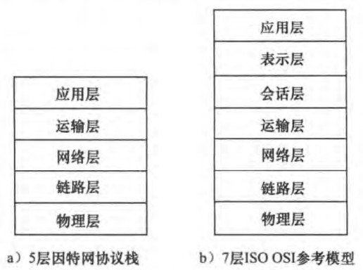
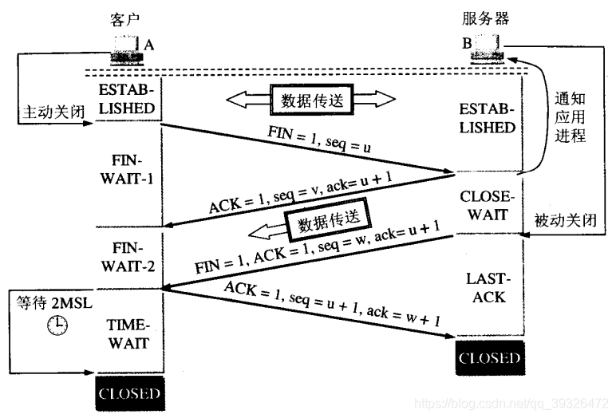
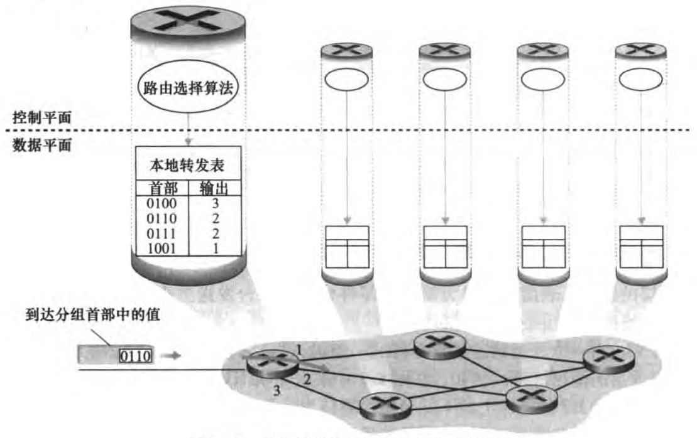
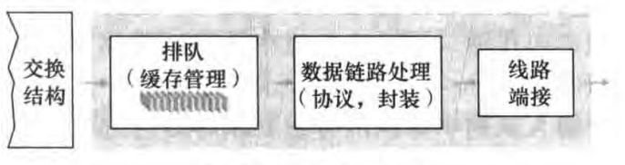

《计算机网络自顶向下方法》笔记
Wei Gu 2022年9月
书看的是第七版、英文版、机械工业出版社，原名是《Computer Networking A Top-Down Approach》。这是我第一次正式接触计网的话题。本书是我的入门书。花了大二暑假以及大三上开学第一周看掉了前七章的，也就是从应用层一直看到链路层，以及最后的无线网络和移动网络。
《计算机网络自顶向下方法》笔记一、计算机网络和因特网1.1 什么是因特网1.1.1 组成描述1.1.2 服务描述1.2 网络边缘1.2.1 接入网1.2.2 物理媒介1.3 网络核心1.3.1 分组交换1.3.2 电路交换1.3.3 网络的网络1.4 分组交换中的时延、丢包、吞吐量1.4.1 时延1.4.2 排队时延和丢包1.4.3 吞吐量1.5 协议层次及其服务模型1.6 网络攻击二、应用层2.1 应用层协议原理2.1.1 网络应用程序体系结构2.1.2 进程通信2.1.3 运输服务2.1.4 应用层协议2.2 Web和HTTP2.2.1 HTTP概况2.2.2 非持续连接和持续连接2.2.3 HTTP报文格式2.2.4 用户与服务器的交互：cookie2.2.5 Web缓存与条件GET2.3 因特网中的电子邮件2.3.1 SMTP2.3.2 与HTTP的对比2.3.3 邮件报文格式2.3.4 邮件访问协议2.4 DNS：因特网的目录服务2.4.1 DNS提供的服务2.4.2 DNS工作机理概述2.4.3 DNS记录和报文2.5 P2P文件分发2.6 视频流和内容分发网2.6.1 因特网视频2.6.2 HTTP流和DASH2.6.3 内容分发网2.6.4 案例学习2.7 套接字编程2.7.1 UDP2.7.2 TCP三、运输层3.1 概述和运输层服务3.1.1 运输层和网络层关系3.1.2 因特网运输层概述3.2 多路复用与多路分解3.2.1 无连接的多路复用与分解3.2.2 面向连接的多路复用与分解3.3 无连接运输：UDP3.3.1 UDP报文段结构3.3.2 UDP检验和3.4 可靠数据传输原理3.4.1 构建可靠数据传输协议3.4.2 流水线可靠数据传输协议3.4.3 回退N步3.4.4 选择重传3.5 面向连接的运输：TCP3.5.1 TCP连接3.5.2 TCP报文段结构3.5.3 往返时间的估计与超时3.5.4 可靠数据传输3.5.5 流量控制3.5.6 TCP连接管理3.6 阻塞控制原理3.6.1 阻塞原因和代价3.6.2 阻塞控制方法3.7 TCP阻塞控制四、网络层：数据平面4.1 网络层概述4.1.1 转发和路由选择：数据平面和控制平面4.1.2 网络服务模型4.2 路由器工作原理4.2.1 输入端口处理和基于目的地转发4.2.2 交换4.2.3 输出端口处理4.2.4 何处出现排队4.2.5 分组调度4.3 网际协议：IPv4、寻址、IPv6及其他4.3.1 IPv4数据报格式4.3.2 IPv4数据报分片4.3.3 IPv4编址4.3.4 网络地址转换（NAT）4.3.5 IPv64.4 通用转发和SDN五、网络层：控制平面5.1 概述5.2 路由选择算法5.2.1 The Link-State (LS) Routing Algorithm5.2.2 The Distance-Vector (DV) Routing Algorithm5.3 Intra-AS Routing in the Internet: OSPF5.4 Routing Among the ISPs: BGP5.4.1 BGP作用5.4.2 通告（advertise）BGP路由信息5.4.3 确定最好的路由5.4.4 IP任播5.4.5 路由选择策略5.5 SDN控制平面5.5.1 结构5.5.2 OpenFlow协议5.5.3 例子5.6 ICMP: The Internet Control Message Protocol5.7 网络管理和SNMP5.7.1 网络管理框架5.7.2 The Simple Network Management Protocol (SNMP)六、链路层和局域网6.1 链路层概述6.1.1 链路层提供的服务6.1.2 链路层在何处实现6.2 差错检测和纠正技术6.2.1 奇偶校验6.2.2 检验和方法6.2.3 循环冗余检测6.3 多路访问链路和协议6.3.1 信道划分协议6.3.2 随机接入协议6.3.3 轮流协议6.3.4 案例：DOCSIS6.4 交换局域网6.4.1 链路层寻址和ARP6.4.2 以太网6.4.3 链路层交换机6.4.4 虚拟局域网6.5 Link Virtualization: A Network as a Link Layer6.6 数据中心网络6.7 Web页面请求的历程6.7.1 准备：DHCP、UDP、IP和以太网6.7.2 仍在准备：DNS和ARP6.7.3 仍在准备：域内路由选择到DNS服务器6.7.4 Web客户-服务器交互：TCP和HTTP七、无线网络和移动网络7.1 概述7.2 无线链路和网络特征7.3 WiFi：802.11无线LAN7.3.1 802.11体系结构7.3.2 802.11MAC协议7.3.3 IEEE 802.11帧7.3.4 在相同IP子网中的移动性7.3.5 802.11中的高级特色7.3.6 个人域网络：蓝牙和ZigBee7.4 蜂窝因特网接入7.4.1 2G7.4.2 3G7.4.3 4G7.5 移动管理7.5.1 寻址7.5.2 路由选择到移动节点7.6 移动IP7.7 管理蜂窝网中的移动性7.8 无线和移动性：对高层协议的影响
一、计算机网络和因特网
本章相当于计网的绪论，讲述了一些基础术语和想法，意在展现计网的big picture。
1.1 什么是因特网
我们将从两个角度回答这个问题：
组成的角度：描述组成它的软硬件
功能的角度：将其视为为分布式应用提供基础服务的联网设施
1.1.1 组成描述
首先看一些术语：
主机（host）/ 端系统（end system）: 所有接入因特网的设备。除了常见的联网手机电脑等，还包括联网的汽车、冰箱、空调等等。主机又可以进一步分成客户端（client）和服务器（server）。
通信链路（communication link）：或者简称链路（link）。即将端系统连接在一起的物理媒介。如双绞线、同轴电缆等。链路的传输速率（transmission rate）以比特/秒（bit/s，或bps）度量。
包/分组（packet）：端系统之间交换的数据是分段的，一段数据称为一个包（或者称为分组）。
包交换机/分组交换机（packet switch）：从它的一条入链路接收分组，并且选择一条出链路将分组转发（forward）出去，包括：
路由（router）：主要用于网络核心（network core）
链路层交换机（link-layer switch）：主要用于接入网（access network）
网络核心和接入网在1.2和1.3讨论
路径（route, or path）：包从一个端系统到另一个端系统所遍历的链路和分组交换机序列。
知道以上术语后，我们可以概括到：
在组成的角度下，因特网是一个由大量端系统通过链路和分组交换机连接而成的网络。
此外，还有：
因特网服务提供商（Internet Service Provider, ISP）：提供接入因特网的服务。ISP自身也是一个由包交换机和通信链路组成的网络。
协议（protocol）：因特网的各种组件都要遵守各式各样的协议，才能保证信息的正常接收和发送。最重要的两个协议是TCP（Transmission Control Protocol）和IP（Internet Protocol）协议。作者如下定义协议：
A protocol defines the format and the order of messages exchanged between two or more communicating entities, as well as the actions taken on the transmission and/or receipt of a message or other event.
譬如：硬件实现的控制协议控制了两块网卡之间的比特流；在端系统中，拥塞控制协议控制了发送方和接收方之间传输数据的速率；路由器中的协议决定了包的路径。
1.1.2 服务描述
作者概括到：
在服务的角度下，因特网是给应用提供服务的基础设施。
互联网应用程序通常是分布式应用程序（distributed application）。这些应用程序运行在多个端系统上，并通过互联网交换数据。端系统和因特网的接口被称作套接字接口（socket interface），该接口规定了在一个端系统运行的程序如何请求因特网基础设施，从而将数据传播到另一个端系统上运行的特定程序。
1.2 网络边缘
所谓的网络边缘（network edge）通常就是指网络的接入层（access layer），也就是网络中直接面向用户连接或访问的部分（定义来自百度百科）。与之对应的是网络核心（network core），网络核心我们将会讨论交换等话题，是下一节的内容。本节中我们将讨论接入网（access network）和物理传输介质（physical meida）。
1.2.1 接入网
接入网是指物理上连接端系统到第一个路由器的网络，这个路由器也称为边缘路由器（edge router）。根据接入方式的不同，可以分为：
1. 家庭接入
1）DSL（digital subscriber line，数字用户线路）
DSL是一种以电话线（双绞线）为传输介质的通信技术。它的ISP就是本地电话公司。由于PC发出的是数字信号，而电话线传播的是模拟信号，所以我们需要使用调制解调器（modem，猫），其中发送端将数字信号变成模拟信号称为调制（modulation）、接收端将模拟信号变回数字信号称为解调（demodulation）。
电话线采用频分复用技术（frequency-division multiplexing）分成了电话、上行和下行三个相对独立的信道，使得用户可以在上网的同时打电话。可以看到下行速率是大于上行速率的（下载速度大于上传速度），于是也称为非对称数字用户线路（ADSL，Asymmetric Digital Subscriber Line）。
电话线的另一头是数字用户线接入复用器（DSLAM，digital subscriber line access multiplexer），DSLAM坐落在电话公司的本地中心局（central office，CO）中。DSLAM会把电话线的模拟信号重新转为数字信号。
2）Cable Internet Access 电缆因特网接入
DSL使用了电话公司现有的电话基础设施，而电缆因特网接入则使用了有线电视现有的基础设施。通信链路同时使用了光纤和同轴电缆，因此该系统也被称为混合光纤同轴（Hybrid Fiber Coax, HFC）系统。用户使用电缆调制解调器（cable modem）通过同轴电缆与光纤节点（fiber node）相连，光纤节点通过光缆与电缆头端（cable head end）相连。在电缆头端，电缆调制解调器端接系统（Cable Modem Termination System）起到DSLAM的作用，即把下行家庭中电缆调制解调器发送的模拟信号转换回数字信号。电缆调制解调器将HFC网络划分为上行和下行两个信道，通常下行速率高于上行速率。
电缆因特网接入的一个重要特点是共享广播媒介（shared broadcast medium）。也就是说：由头端向下行发送的每个包会广播到所有家庭；每个家庭发送的包也是通过共享的上行信道向头端传输。这就会产生多人同时使用网络导致网速变慢的情况。而DSL下，每户人家到中心局的接入是专线。
3）光纤到户（Fiber To The Home, FTTH）
就是提供了一根光纤直接从本地中心局到每个家庭中。具体有以下方案：
直接光纤（direct fiber）：每户人家独享一根光纤到中心局，成本太高。
optical-distribution network architecture: 从中心局出来的每根光纤由许多家庭共享，直到相对接近这些家庭的位置时，才分成每户一根光纤。这里“分成”有两个竞争方案：
AON（active optical network，主动光纤网络）：本质上是交换以太网（switched Ethernet），第六章再讨论。
PON（passive optical network，被动光纤网络）：每个家庭有光纤网络端接器（optical network terminator, ONT）。中心局有光纤线路端接器（optical line terminator，OLT）。OLT将光信号转变为电信号。和电缆因特网接入类似，光纤分配器将把所有OLT发来的包广播给所有下游家庭。通常家庭里会用一台无线路由器与ONT相连，并用这台路由器接入因特网。
4）其他
在偏远地区有卫星链路可以上网。还可以用电话线拨号上网（dial-up access），注意到拨号上网时就不能打电话了。
2. 企业（和家庭）接入
1）以太网（Ethernet）
使用局域网（LAN，local area network）将端系统连接到边缘路由器。以太网（Ethernet）是最流行的局域网接入方式。用户使用双绞线与以太网交换机（Ethernet switch）相连，从而接入因特网。
2）WiFi
WiFi是一种无线局域网（wireless LAN）技术。企业中用户可以接入基站（base station）（或者称为接入点 access point），基站再和企业网（通常是有线以太网）相连，有线以太网再和有线因特网相连。家庭里我们可以接入基站，基站再和路由器相连，路由器通过猫接入因特网。
3. 广域无线接入
即3G、LTE等技术。通过蜂窝网络（cellular network）提供商运营的基站来发送和接收分组。基站信号比局域网覆盖更远。
1.2.2 物理媒介
物理媒介（physical media）可以分为：
guided media（导引型媒体）：电波沿着固体媒介传播
unguided media（非导引型媒体）：电波在空气或外层空间传播
成本不高，比人工便宜。
具体有：
双绞铜线（twisted-pair copper wire）：便宜。由两条相互螺旋缠绕的铜线组成。用于电话网和局域网。现代的双绞线技术速率（10Mbps~10Gbps）和传输距离（~100m）还可以。
同轴电缆（coaxial cable）：也由两个铜导体构成，但是它们是同心的，而非并行的。借助特殊的结构和绝缘层，同轴电缆可得到较高的数据传输速率；在有线电视系统中应用广泛；同轴电缆可被用作引导型的共享媒体。
光纤（fiber optic）：一种可以引导光脉冲的媒体。快（~100Gbps）、传播长、传播损失小。贵。
陆地无线电信道：地面基站发送的电磁波。
卫星无线电信道：卫星发送的电磁波。
1.3 网络核心
网络核心（network core）即：the mesh of packet switches and links that interconnects the Internet's end system. 本节我们将探讨分组交换（packet switch），和对应的电路交换（circuit switch），以及网络结构。
1.3.1 分组交换
端系统彼此交换报文（message），（应用层的数据称为报文）。报文包括了控制信息和数据信息。源端系统将报文划分为多个数据块，这个数据块称为包（packet）或者分组。我们已经再1.1.1节提及分组交换了，还有以下几点内容需要补充。
存储转发传输（store-and-forward transmission）：交换机在收到一个完成的分组后，才会向链路输出转发分组，否则就将收到的部分分组缓存起来。因等待一个分组的全部数据而导致的时间开销被称为存储转发时延（store-and-forward delay）。
排队时延（queuing delay）和丢包（packet loss）：对每个输出链路，分组交换机都有一个输出缓存（output buffer）或者称为输出队列（output queue）。当一个输出链路被占用时，包需要在队列中等待，等待时间称为排队时延。当队列满时，新来的包会被丢弃，称为丢包。
转发表（forwarding table）和路由选择协议（routing protocol）：分组交换机之所以能够知道往哪转发分组是因为其内部有一个转发表，这个表维护了一个IP地址和链路的对应关系。而转发表的设置是通过特殊的路由选择协议实现的。
1.3.2 电路交换
分组交换和电路交换区别
In circuit-switched networks, the resources needed along a path (buffers, link transmission rate) to provide for communication between the end systems are reserved for the duration of the communication session between the end systems. 相当于预定餐馆的座位
In packet-switched networks, these resources are not reserved; a session's messages use the resources on demand and, as a consequence, may have to wait (i.e. queue) for access to a communication link. 相当于直接去餐馆吃饭，但是不一定有位置
例子
传统的电话网络就是一个电路交换网络。在发送方发送信息之前，该网络必须在发送方和接收方之间建立一条连接，此时路径上的交换机都将为这种连接维护连接状态。用电话的术语来说，该连接称为一条电路（circuit）。当网络创建这种电路时，它也在连接期间在该网络链路上预留了恒定的传输速率，使得发送方能以恒定速率向接收方传送数据。
复用
为了高效合理地利用资源，通常采用多路复用技术（multiplexing） ，使多路信号共享同一条链路进行传输。书上介绍了频分复用（frequency-division multiplexing, FDM）和时分复用（time-division multiplexing, TDM）。
FDM：将频率域划分为频段，然后将频段分配给连接；此频段被用来专门传输链接的数据。该频段的宽度称为带宽（bandwidth）。譬如无线广播AM或FM。
TDM：是指将时间划分为固定时长的帧（frame），每个帧则又被划分为固定数量的时间片段（slot，时隙）；当网络需要建立一条连接时，网络将在每个帧中为该连接指定一个时隙；在该时隙内，链路用来传输该连接的数据。
分组交换和电路交换的对比
分组交换
优点：它提供了比电路交换更好的带宽共享；它比电路交换更简单、更有效、实现成本更低。允许更多用户
缺点：分组交换不适合实时服务，因为端到端的时延是可变、不可预测的，这和整个网络的情况相关
电路交换
优点：提供了端对端传输数据的速率保证；
缺点：电路交换存在静默期（silent period），这是指专用电路空闲时，其占用的资源并没有得到充分的利用；建立连接的过程比较复杂
1.3.3 网络的网络
我们已经知道了端系统通过access ISP连接因特网。那这些access ISP怎么互相连接呢？这里直接给出最终的样子：
我们可以这么思考这个问题。首先如果接入网两两连接形成全连接图，那么会导致复杂度爆炸，肯定是不可行的。于是我们会想让接入网连到一个全球承载ISP（global transit ISP）上，全球ISP向用户收费。既然有钱可赚，那么会有多个全球ISP。注意到，这些全球ISP之间必须要相互连通。我们可以通过peer link（图中红线），也可以设置IXP（internet exchange point）专门给它们交换数据。全球ISP可能照顾不了角角落落，于是我们有regional net来负责区域的接入网。最后我们还有内容提供商网络（content provider network），譬如谷歌等公司会运行自己的网络，来给用户提供服务和内容。
1.4 分组交换中的时延、丢包、吞吐量
1.4.1 时延
时延包括：
处理时延（processing delay）：处理时延是因为节点需要解析分组的必要信息然后决定其出链路（索引转发表等操作）而产生的，通常在微秒或者更低数量级。
排队时延（queuing delay）：分组在链路上等待传输而产生的时延，和队列的流量强度相关，通常在毫秒级到微秒级。
传输时延（transmission delay）：传输时延是将所有分组的比特推向链路所有需要的时间，实际的传输时延通常在毫秒到微秒数量级。若用L表示分组的长度、R bits/sec表示从路由器A到B的链路传输速率，则传输时延是L/R。
传播时延（propagation delay）：传播时延是指比特进入链路后，从该链路的起点到下一个结点所用的时间；广域网中，传播时延一般是毫秒级的。若d是路由器A到B的距离、s是链路的传播速率，则传播时延是d/s。
传输时延和传播时延的对比
如果打个比方的话，传输时延就是大卡车经过收费站的时间而传播时延就是车在高速公路上行驶的时间。传输时延是分组长度和链路传输速率的函数。传播时延是两台路由器间距离和链路传播速率的函数
四个时延相加得到节点时延（nodal delay）:
1.4.2 排队时延和丢包
在1.3.1其实已经做了初步讨论了。若一个包有L位，每秒有a个包，链路传输速率是R，那么La/R被称为流量强度（traffic intensity）。当流量强度大于1时，等待队列里的数据将趋向无穷多，丢包不可避免。
1.4.3 吞吐量
吞吐量可以近似为源和目的地之间路径的最小传输速率。最小传输速率的链路为瓶颈链路（bottleneck link）。在今天，因特网对吞吐率的限制因素通常是接入网。
1.5 协议层次及其服务模型
为了给网络协议的设计提供一个结构，网络设计者以分层（layer）的方式组织协议以及实现这些协议的软硬件。每个协议属于这些层次之一。每个协议通过以下方式提供服务：1. 在这层中执行了某些操作；2. 使用直接下层的服务。
协议分层具有概念化和结构化的优点。模块化使得更新系统组件更为容易。但是分层也有其缺点，如功能上的冗余，以及某层需要在其它层才出现的信息。
总体来说，将各层的所有协议组合起来，称为协议栈（protocol stack）。因特网的协议栈有5个层次组成：物理层、链路层、网络层、传输层、应用层。
应用层（application layer）：应用层协议分布在多个端系统，端系统中的应用程序使用该协议与另一个端系统中的应用程序通信。处于应用层的分组称为报文（message）。应用层协议包括HTTP、SMTP、FTP等。
运输层（transport layer）：传输层在application endpoints之间传输应用层报文。因特网中有两个传输层协议：TCP和UDP。传输层的分组称为报文段（segment）。TCP提供确保传递、流量控制、拥塞控制机制。UDP提供无连接服务，即不提供不必要服务的服务。没有可靠性、没有流量和拥塞控制。
网络层（network layer）：网络层将称为数据报（datagram）的网络层分组从一台主机移动到另一台主机。网络层协议包含IP协议以及其他一些路由选择协议。
链路层（link layer）：链路层将称为帧（frame）的链路层分组从一个节点（host or router）移动到路径上的另一个节点。协议包括以太网、WiFi和电缆接入网的DOCSIS协议等。
物理层（physical layer）：物理层的任务是将帧中的比特从一个节点移动到下一个节点。协议与链路的实际传输媒介相关。
OSI（open systems interconnection）模型是另一种协议栈，由国际标准化组织（ISO）提出。在因特网协议栈的基础上额外还有表示层和会话层。
表示层（presentation layer）：allow applications to interpret meaning of data. e.g., encryption, compression, machine-specific conventions
会话层（session layer）：synchronization, checkpointing, recovery of data exchange
因特网协议栈缺少了上面两层，将两层的功能留给了开发者自行实现。

具体来说整个通信过程如下图：（体现了封装encapsulation的思想，譬如说运输层报文段封装了应用层报文）
注意到每一层的分组包括了：首部字段（header fields）和有效负载（payload field）。其中有效负载即为来自上一层的分组数据，而首部字段提供了额外信息使得数据能正确传送。
1.6 网络攻击
包含：
恶意软件（malware）: 电脑中毒！此外，受害主机可能称为botnet（僵尸网络）中的一员，被操控实现DDoS攻击。
病毒（virus）：self-replicating infection by receiving/executing object。所谓自我复制是指：一旦感染一台主机，就会从那台主机寻求机会进入因特网上的其他主机，从而扩大感染。
蠕虫（worm）: self-replicating infection by receiving object that gets itself executed。无明显用户交互，用户可能运行了一个攻击者能发送恶意软件的脆弱的网络应用程序。
DoS（Denial-of-Service）攻击：让受攻击的网络、端系统或其他基础设施不能被合法用户使用
Vulnerability attack：向目标主机发送一串有意设计的报文，使其奔溃
Bandwidth flooding：向目标主机发送大量包，使接入链路拥挤，合法用户不能访问服务器
Connection flooding：在目标主机中创建大量的半开或全开TCP连接（第3章讨论），使其停止接受合法的连接。
DDoS攻击：Dos攻击时大量数据从单一源发出，可能会被某路由器检测出该攻击，并在流量靠近路由器之前就将其阻挡下来，所以有了分布式Dos(Distributed DoS, DDos)攻击，也就是攻击者控制多个源进行DoS攻击。
包嗅探（packet sniffing）：由于广播机制，可以获得分组的副本。
IP哄骗（IP snoofing）：伪装成你信任的人。
1.7 计算机网络和因特网历史没有整理
二、应用层
本章我们先会进一步讨论一些基本概念，再仔细研究HTTP、SMTP、DNS等应用层协议，最后讨论P2P体系结构以及视频流的相关内容。
2.1 应用层协议原理
网络应用开发的核心是：写出能够在不同端系统运行以及可以通过网络彼此通信的程序。值得注意的是，我们不需要写在网络核心设备如路由器或者链路层交换机上运行的软件，毕竟它们连应用层都没有。
2.1.1 网络应用程序体系结构
在网络应用程序开发者的角度下，有以下两种常见的网络应用程序体系结构：
客户-服务器体系结构（client-server architecture）
有一个总是打开的主机（服务器），它服务于来自许多其他主机（客户）的请求。服务器和客户的定义见2.1.2节
服务器具有固定的、周知的地址（IP地址）
大量服务器组成数据中心（data center）
客户之间不直接通信
P2P体系结构（peer-to-peer, P2P architecture）
对位于数据中心的专用服务器的依赖小，甚至没有依赖
应用程序在一对间断（intermittently）连接的主机之间直接通信。这些主机被称为对等方（peer）。
具有自扩展性（self-scalability）：在请求数据、增加系统工作负载的同时，我也在分发数据，从而增加系统的服务能力。不需要庞大的服务器基础设施和服务器带宽，但是面临安全性、性能和可靠性等挑战。
2.1.2 进程通信
客户和服务器进程
书上如此定义：
In the context of a communication between a pair of processes, the process that initiates the communication (that is, initially contacts the other process at the beginning of the session) is labeled as the client. The process that waits to be contacted to begin the session is the server.
注意到无论是客户-服务器还是P2P体系结构，都可以存在客户和服务器进程。特别的，一个进程可以既是客户也是服务器。譬如在P2P文件共享系统中，进程既能请求文件也能发送文件。
注意到，严格来说是进程之间通信而不是程序之间通信。通信就是指交换报文。
进程和计算机网络之间的接口
1.1.2节已经指出：端系统和因特网的接口被称作套接字接口（socket interface）。进一步讲，套接字是同一台主机内应用层和运输层之间的接口，也就是应用程序和网络之间的API。
开发者可以控制套接字在应用层的一切内容，但是对于运输层端几乎没有控制权，仅限于：
选择运输层协议
设定几个运输层参数，比如最大缓存和最长传输层报文长度等
进程寻址
我们需要定义：
主机的地址
目的主机接收进程的标识符
在因特网中，IP地址（IP address）标识主机，端口号（port number）标识接收进程。许多协议有自己的默认端口，譬如HTTP默认端口为80，SMTP默认端口为25。
2.1.3 运输服务
在继续介绍应用层之前，我们需要介绍一点运输层的知识。更多内容将在第三章介绍。
应用程序的要求
大体有如下四点要求：
可靠数据传输（reliable data transfer）：确保数据不会丢失。对于可以承受一定数据丢失的应用，我们称之为loss-tolerant application。
吞吐量（throughput）：确保某个最低可用吞吐量。具有吞吐量要求的应用称之为bandwith-sensitive application，如多媒体应用。相反，elastic application无所谓带宽大小，如电子邮件、文件传输等。（当然还是越大越好）
定时（timing）：保证时延上限。譬如像守望先锋等多人在线游戏需要低延迟。
安全性（security）：可以加密传输的数据。
因特网提供的运输服务：TCP，UDP
TCP（transmission control protocol，传输控制协议）
面向连接：在应用层报文开始流动前，客户和服务器会先互相交换运输层控制信息，这个过程称为握手（handshaking）。握手阶段后将建立一个TCP连接。这条链接是全双工（full-duplex）的，即连接双方使用该条链接可以同时进行报文的收发。这条连接将在通讯结束后拆除。
可靠的数据传输：确保无差错、正确顺序的传输。
拥塞控制机制：当网络拥塞时，TCP将限制发送进程。不一定为某个通信进程带来好处，但是为网络整体带来好处。
SSL（secure sockets layer, 安全套接字层）：TCP的加强版本，提供了加密等安全性服务。
UDP（user datagram protocol，用户数据报协议）
connectionless：无握手过程
不可靠数据传输：数据可能重复、遗漏、乱序到达
无拥塞控制机制
可以看到运输层无法对吞吐量和定时做出保证，但是可以对可靠数据传输和安全性做出保证。
2.1.4 应用层协议
应用层协议（application-layer protocol）定义了如何传递报文。具体包括：
交换的报文类型（请求或者响应）
报文中包含哪些字段（field）
字段的语义
一个进程何时以及如何收发报文
应用层协议有些位于公共域中的，譬如浏览器都应该遵守HTTP协议；而有些是专用的（proprietary），不为公共所知道和使用的，譬如Skype。
接下来，我们将逐一讨论Web、电子邮件、目录服务（DNS）、流式视频和P2P，一共五种网络应用程序，及其相关协议。
2.2 Web和HTTP
2.2.1 HTTP概况
Web使用了客户-服务器的应用程序体系结构。HTTP（HyperText Transfer Protocol，超文本传输协议）是Web的应用层协议，定义了客户端（浏览器）和服务器之间传输的报文的结构和方式。有关HTTP我们需要知道：
HTTP使用TCP作为支撑运输协议，因而HTTP协议不用担心数据丢失，也不关注TCP从网络的数据丢失和乱序故障中恢复的细节。
HTTP是无状态协议（stateless protocol），即HTTP服务器并不保存关于客户的任何信息。假如客户在短时间内两次请求同一对象，服务器会发送两次该对象。
下面是一些Web术语：
对象（object）：一个Web页面（Web page）由多个对象组成。对象包括HTML文件、JPEG图片、Java小程序等。这些对象可以通过URL寻址。
URL（Universal Resource Locator，统一资源定位符）：譬如
http://www.someSchool.edu/someDepartment/picture.gif，其中www.someSchool.edu称做主机名（host name）、/someDepartment/picture.gif称为路径名（path name）。
2.2.2 非持续连接和持续连接
在因特网应用程序中，客户端和服务器将在很长的时间范围里通信，其中客户发出一系列请求并且服务器对每个请求进行响应。具体来说可以细分为：
非持续连接（non-persistent connection）：每对请求/响应经一个单独的TCP连接发送
持续连接（persistent connection）：所有的请求/响应式通过相同的TCP连接发送
默认情况下，HTTP采用持续连接，当TCP连接在一定时间后未被使用，则关闭这个连接。
譬如一个Web页面包含一个HTML和10张图片，那么客户将发出11次（理想情况下）请求。如果是非持续连接的话，会建立11个TCP连接，给Web服务器造成负担，并且每次握手也需要额外的时间；相反持续连接只需要一次TCP连接。此外，非持续连接可以通过并行加速，持续连接可以通过流水线加速。
忽略了一些内容，更多内容将在第三章讲述
2.2.3 HTTP报文格式
HTTP报文有两种：请求报文（request message）和响应报文（respond message）。下面分别讨论之。
1）请求报文
先看一个例子：
xxxxxxxxxx51GET /somedir/page.html HTTP/1.12HOST: www.someschool.edu3Connection: close4User-agent: Mozilla/5.05Accept-language: fr第一行叫做请求行（request line），包括方法字段（GET）、URL字段（请求对象的路径名）和HTTP版本字段
接下来四行都称为首部行（header lines），依次指明了请求对象所在的主机、希望服务器发送完对象后关闭连接、浏览器类型、对象的语言版本。
HTTP请求报文的通用格式如下：

方法字段包括：
GET：此时实体体（entity body）为空
POST：譬如在提交表单时、向搜索引擎提供关键词时，需要在实体体中写入相关数据。当然HTML表单也经常使用GET方法，此时数据会在URL中，譬如
www.somesite.com/animalsearch?monkeys&bananas。HEAD：类似于GET，但是服务器只用一个HTTP报文进行响应，不返回请求对象。可以被开发者用来调试跟踪。
PUT：常与Web发行工具联合使用。允许用户上传对象到指定路径
DELETE：允许用户删除服务器上的对象
telnet远程登录
telnet协议也是应用层的一种协议，telnet程序允许用户远程登录服务器。譬如：（红色框部分为我输入的）
2）响应报文
先看一个例子：
x1HTTP/1.1 200 OK2Connection: close3Data: Tue, 18 Aug 2015 15:44:04 GMT4Server: Apache/2.2.3 (CentOS)5Last-Modified: Tue, 18 Aug 2015 15:11:03 GMT6Content-Length: 68217Content-Type: text/html8
9(data data data ...)第一行是状态行（status line），包括协议版本字段、状态码和相应状态信息
接下来六行是首部行（header lines），其中
connection: close告诉客户，发送完报文后将关闭该TCP连接Data是服务器产生并发送该相应报文的时间Last-Modified是对象创建或最后修改的日期和时间
最后是实体体（entity body），也就是报文的主要部分，包含了请求的对象本身。
HTTP响应报文的通用格式如下：

常见的状态码和短语包括：
200 OK：请求成功，信息在返回的响应报文中
301 Moved Permanently：请求的对象已经被永久转移了，新的URL在响应报文的
Location:首部行中给出。客户软件将自动获取新的URL。400 Bad Request：通用error code，表明该请求无法被服务器理解
404 Not Found：请求的文档不在服务器上
505 HTTP Version Not Supported：服务器不支持请求报文使用的HTTP协议
2.2.4 用户与服务器的交互：cookie
2.2.1节已提及HTTP是无状态的协议，然而一个Web站点通常希望能够识别用户，无论是想限制用户的访问，还是想定制提供给用户的内容。为此，Web站点可以使用cookie来标识用户。cookie技术包含以下四个部分：
HTTP响应报文中的cookie首部行（i.e. Set-cookie: header）
HTTP请求报文中的cookie首部行（i.e. Cookie: header）
用户端系统中的cookie文件，由浏览器保存维护
Web站点的一个后端数据库，建立cookie和用户身份的关联
用cookie追踪用户状态类似如图：
此外，cookie带来的隐私问题仍有争议。
2.2.5 Web缓存与条件GET
Web缓存
Web缓存器（Web cache）也叫做代理服务器（proxy server），能代替初始服务器（origin server）来满足HTTP请求。若代理服务器有请求对象的缓存，则用HTTP响应返回该对象；否则向初始服务器发送HTTP请求。类似如图：
Web缓存器优势有：
减少对客户请求的响应时间，特别是当客户与初始服务器之间的瓶颈带宽远低于客户与Web缓存器之间的瓶颈带宽时。
减少机构的接入链路到因特网的通信量。于是机构不必着急于增加带宽，从而降低了费用。
减少因特网上的流量，改善整体因特网的性
条件GET
但是代理服务器上缓存的数据可能是过时的，HTTP的条件GET（conditional GET）可以解决这个问题。
条件GET即：
请求报文使用GET方法
请求报文中包含一个
If-Modified-Since:首部行。
例子如下：
Web缓存器向某Web服务器发送一个请求报文：
xxxxxxxxxx21GET /fruit/kiwi.gif HTTP/1.12Host: www.exotiquecuisine.com
该Web服务器向缓存器发送具有请求对象的响应报文。缓存器在存储该对象时也存储了最后修改日期（即
Last-Modified:首部行内容）
xxxxxxxxxx71HTTP/1.1 200 OK2Data: Sat, 3 Oct 2015 15:39:293Server: Apache/1.3.0 (Unix)4Last-Modified: Wed, 9 Sep 2015 09:23:245Content-Type: image/gif6(data data data ...)
一段时间后，用户经过该缓存器请求同一个对象。该缓存器通过发送一个条件GET执行最新检查。注意到
If-Modified-Since:首部行的值就是当初Last-Modified:首部行的值。
xxxxxxxxxx31GET /fruit/kiwi.gif HTTP/1.12Host: www.exotiquecuisine.com3If-modified-since: Wed, 9 Sep 2015 09:23:24
Web服务器向该缓存器发送一个响应报文。若没有修改，返回的实体体内容为空。
xxxxxxxxxx51HTTP/1.1 304 Not Modified2Data: Sat, 10 Oct 2015 15:39:293Server: Apache/1.3.0 (Unix)4(empty entity body)
2.3 因特网中的电子邮件
因特网电子邮件系统有三个主要组成部分：
用户代理（user agent）：允许用户阅读、回复、转发、保存和撰写报文。如Outlook和Apple Mail。
邮件服务器（mail server）：一般发送者和接收者的邮件服务器是两个服务器，之间的通信使用SMTP协议。
简单邮件传输协议（simple mail transfer protocol, SMTP）：因特网电子邮件中主要的应用层协议。使用TCP作为其运输层协议。
邮件发送过程：（进一步的讨论在2.3.4节）
发送者的邮件代理向其邮件服务器发送邮件，邮件会放在该邮件服务器的外出报文队列（outgoing message queue）中；然后传输到接收者的邮件服务器中；再被分发到接受方的邮箱（mailbox）中；接收者的邮件代理在其邮件服务器的邮箱中获取该报文。
图例如下：
2.3.1 SMTP
基本的邮件发送过程已经讨论过了，下面对SMTP进行一点补充。
邮件报文的首部行和实体体（邮件报文格式在2.3.3节讨论）都使用7位的ASCII表示。于是在SMTP传送邮件之前，需要将二进制多媒体数据编码为ASCII码；传输后也要将相应的ASCII码解码还原回多媒体数据。
一般不使用中间邮件服务器，即便两个邮件服务器位于地球两端。
默认端口25、持续连接、TCP作为运输层协议
在完成TCP握手后，还需要进行SMTP握手，下面给出一个例子：
SMTP握手，假设客户（C）是crepes.fr，服务器（S）是hamburger.edu。例子中C和S只是标识该信息是谁发送的，在真实情况下并不存在。"//"注释也是不存在的
xxxxxxxxxx151S: 220 hamburger.edu //服务器给出220响应，表示TCP连上了2C: HELO crepes.fr //HELO命令表明自己身份，crepes.fr是服务器名字，类似163.com3S: 250 Hello crepes.fr, pleased to meet you //250表示收到，后面短语可自定义4C: MAIL FROM: <alice@crepes.fr> //MAIL FROM命令给出发送者的邮箱5S: 250 alice@crepes.fr ... Sender ok //250表示收到，后面短语可自定义6C: RCPT TO: <bob@hamburger.edu> //RCPT TO命令给出收件者邮箱7S: 250 bob@hamburger.edu ... Recipent ok //250表示收到，后面短语可自定义8C: DATA //DATA命令表明我要告诉你邮件内容了9S: 354 Enter mail, end with "." on a line by itself //354表示你可以写邮件了，后面短语自定义10C: balabala //说了一堆11C: balabala //说了两堆12C: . //单独一个"."表示写完了13S: 250 Message accepted for delivery //250表示收到，后面短语可自定义14C: QUIT //QUIT命令表示所有邮件发送完了15S: 221 hamburger.edu closing connection //221表示TCP连接结束，后面短语可自定义2.3.2 与HTTP的对比
HTTP是一个拉协议（pull protocol），而SMTP是一个推协议（push protocol）。即用户通过HTTP主动向服务器请求内容，而SMTP则是客户将内容推向服务器端
SMTP只能使用7位ASCII码，而HTTP的实体体不受要求
HTTP将每个对象封装在它自己的响应报文里（一个报文一个对象），而SMTP则将所有的报文对象放到一个报文之中
2.3.3 邮件报文格式
在2.3.1节看到的SMTP握手过程其实忽略了邮件报文格式，也就是第10、11行的balabala具体内容。这里做一点补充。一个典型的报文结构如下：
xxxxxxxxxx61From: alice@crepes.fr2To: bob@hamburger.edu3Subject: Searching for the meaning of life.4(正文)6.
注意到上述的From:和To:首部行虽然看上去和2.3.1节MAIL FROM:和RCPT TO:类似，但是前者是邮件报文的首部行，后者是SMTP握手协议的命令。
2.3.4 邮件访问协议
2.3节开头我们已经讨论过邮件发送过程了，如下图：
但是还有几个问题值得我们讨论：
为什么需要Alice的邮件服务器，直接通过Alice的代理向Bob的邮件服务器发送不行吗？这是因为：Primarily because without relaying through Alice's mail server, Alice's user agent doesn't have any recourse to an unreachable destination mail server. Alice的邮件服务器可以不断尝试给Bob邮件服务器发送报文，直到Bob邮件服务器收到该报文。
为什么需要Bob的代理，Bob直接登录到服务器主机，并在上面运行客户端程序阅读电子邮件不行吗？一方面这是因为Bob可能希望在个人电脑或者手机等设备去阅读邮件，另一方面代理可以提供更丰富的功能。
Bob的代理是要从邮件服务器获取邮件，这是一个拉操作，然而2.3.2节已经提及SMTP是一个推协议。于是我们需要引入特殊的邮件访问协议（mail access protocol），允许Bob的代理能够从邮箱里获取数据。而这便是本节讨论的话题。
1）POP3
POP3（post office protocol--Version 3, 第三版的邮局协议）特点如下：
简单，功能有限
邮件服务器使用端口110来建立TCP连接
三个工作阶段
特许（authorization）：用户代理发送密码和用户名，进行身份鉴别
事务处理（transaction）：用户代理取回报文，同时还可以做删除标记、取消删除标记、或者统计邮件信息
更新（update）：在用户退出后，结束POP3会话，删除被标记的邮件
例子：
xxxxxxxxxx171C: telnet <mailserver> 110 //mailserver类似pop.163.com2S: +OK POP3 server ready3C: user <username> //user命令输入用户名4S: +OK5C: pass <password> //pass命令输入密码，密码是明文6C: +OK user successfully logged on7C: list //list命令查看邮箱中所有报文8S: 1 498 //报文1 长度498字节9S: 2 91210S: .11C: retr 1 //retr命令获取报文12S: balabala //邮件报文格式见2.3.3节13S: balabala14S: .15C: dele 1 //dele命令删去报文116C: quit //quit命令17S: +OK POP3 server signing off此外，POP3用户代理可以被用户配置为”download and delete“ or "download and keep"两种模式。POP3代理发出的命令和其工作模式相关。
2）IMAP
比起POP3，IMAP（internet mail access protocol 因特网邮件访问协议）复杂但提供更多功能。包括：
将每个报文和一个文件夹联系起来。可以实现垃圾邮件文件夹、星标邮件文件夹、普通邮件文件夹等
允许用户代理获取报文特定部分。让低带宽的用户避免邮件中的音频视频等大文件。
3）HTTP
这种方式主要是指，用户使用HTTP协议和邮件服务器通信。用户代理就是普通的浏览器。此时无论是Alice发送邮件到服务器还是Bob从服务器获取邮件都是通过HTTP协议。但是，邮件服务器之间还是使用SMTP协议的。
IMAP和HTTP相关内容书上讨论的也很简单，大体如上
2.4 DNS：因特网的目录服务
人更容易记住主机名（hostname），譬如www.facebook.com。然而主机名几乎没有提供有关主机在因特网中位置的信息，而且不定长的主机名也难以处理。因此路由器更喜欢IP地址（IP地址）。于是我们需要一种能进行主机名到IP地址转换的目录服务，而这便是DNS（Domain Name System，DNS）的主要任务。
2.4.1 DNS提供的服务
DNS是什么？这可以从两个角度回答：
一个由分层的DNS服务器实现的分布式数据库
一个使主机能够查询分布式数据库的应用层协议。该协议运行在UDP之上，使用53号端口。
DNS提供的服务包括：
主机名到IP地址转换：DNS客户将主机名发送到DNS服务器，DNS服务器返回该主机名的IP地址。客户再通过该IP地址建立TCP连接。
主机别名（host aliasing）：有着复杂主机名的主机可能拥有一个或者多个相对简单的别名。原先的主机名称为规范主机名（canonical hostname）。
邮件服务器别名（mail server aliasing）：给邮件服务器的复杂主机名起一个简单的别名。DNS还允许一个公司的邮件服务器和Web服务器使用相同的主机别名。
负载分配（load distribution）：多个服务器可以使用相同的别名或者规范主机名，但是它们IP地址当然不同。当客户查询该主机名的IP地址时，DNS服务器将返回所有IP地址。有意思的是，每次查询后，DNS会循环返回IP地址的顺序。譬如说，第一次查询IP地址顺序是abc，第二次是bca，第三次是cab。而客户一般就选取第一个IP地址发送HTTP请求报文。这便实现了负载分配。
2.4.2 DNS工作机理概述
这里主要讨论DNS服务器的分布式设计方案和DNS缓存。
1）分布式、层次结构的数据库
DNS服务器大致分为三类：
根DNS服务器（root DNS servers）：全世界有400多个根服务器，由13个组织管理。提供了TLD服务器的IP地址。
顶级域（top-level domain, TLD）服务器：对于（com、org、cn、uk等）顶级域，都有TLD服务器。提供了权威DNS服务器的IP地址
权威DNS服务器（authoritative DNS servers）：如facebook.com DNS服务器、umass.edu DNS服务器。
此外在层次结构之外，还有一种本地DNS服务器（local DNS server），起到代理的作用。下面是DNS查询方式的具体例子。该例中主机cse.nyu.edu想要知道gaia.cs.umass.edu的IP地址。一共由8份DNS报文。请求主机先发送DNS查询报文给本地DNS服务器（步骤1）。本地DNS服务器将该报文转发给根DNS服务器（步骤2）。根DNS服务器注意到edu前缀，并返回edu的TLD服务器的IP地址（步骤3）。本地服务器再发送查询报文给TLD服务器（步骤4）。TLD服务器注意到umass.edu前缀，并返回dns.umass.edu这个权威DNS服务器的IP地址（步骤5）。本地服务器再发送查询报文给权威DNS服务器（步骤6），权威DNS服务器返回最终的IP地址（步骤7）。最后本地服务器将最终的IP地址发送给请求主机（步骤8）.
DNS查询有两种，上图中1称为递归查询（recursive query），2、4、6称为迭代查询（iterative query）。这里递归指我把任务交给你了，你自己琢磨琢磨，等下告诉我答案就好了；迭代指你不要直接告诉我答案，你告诉我下一步我该怎么做，我继续琢磨琢磨。通常从请求主机到本地DNS服务器的查询是递归的，其余查询是迭代的。
2）DNS缓存
DNS缓存（DNS caching）指：每当DNS服务器发出请求后收到回答时，就将回答的内容缓存在它自己的主机。因为主机名和IP地址之间的映射不是永久的，所以DNS服务器在经过一段时间（两天）后会丢弃缓存的信息。
2.4.3 DNS记录和报文
1）DNS记录
DNS服务器存储了资源记录（resource record, RR）。RR提供了主机名到IP地址的映射。RR是一个4元组：(Name, Value, Type, TTL)。其中TTL是该记录已经存在的时间，用来决定是否要从缓存中删除。下面所有的讨论都忽略了TTL。
介绍四种Type：
type=A：name为主机名，value为对应的IP地址。如
(relay2.bar.foo.com, 145.37.93.126, A)type=NS：name为域名，value为知道如何获得该域下主机IP地址的权威DNS服务器的主机名。如
(foo.com, dns.foo.com, NS)type=CNAME：name是别名，value是规范主机名。如
(foo.com, relay1.bar.foo.com, CNAME)type=MX：value为name所对应的邮件服务器的规范主机名。如
(foo,com, mail.bar.foo.com, MX)。通过使用MX记录，一个组织的邮件服务器和其他服务器（譬如Web服务器）可以使用相同的别名。
2）DNS报文
DNS报文只有查询（query）和回答（reply）报文两种，且格式相同。DNS报文中各字段的语义如下：
首部区域（header section）：前12字节。其中
标识符是一个用来标记该查询的16比特数，该标识符会被复制到相应的回答报文里，以便匹配请求和回答
标志字段有若干标志：1-bit query/reply flag, 1-bit authoritative flag is set in a reply message when a DNS server is an authoritative server for a queried name, 1-bit recursion-desired flag, 1-bit recursion-available flag, 以及4个有关数量的字段，用来指示4类数据区域出现的数量
问题区域（question section）：包含了正在进行的查询信息。包括被查询的名字和类型
回答区域（answer section）：包含了对最初请求的名字的资源记录，可以有多条
权威区域（authority section）：包含了其他权威服务器的信息
附加区域（additional section）：包含了其它有帮助的记录。比如在对于一个MX请求的回答报文，回答区域指出了邮件服务器的规范主机名，而附加区域里包含一个类型为A的关于该规范主机名的的IP地址
还是有点不明就里，希望学校能有相关实验
3）在DNS数据库插入记录
当你注册一个域名时，需要向注册登记机构（registrar）提供你的primary和secondary权威DNS服务器的名字和IP地址，譬如是dns1.networkutopia.com和dns2.networkutopia.com及212.212.212.1和212.212.212.2. （个人认为secondary authoritative DNS server只是提供了额外的保障，并不是必须的）。注册登记机构就会在networkutopia.com的primary权威DNS服务器插入以下两条RR：（secondary权威DNS服务器也是类似的）
xxxxxxxxxx21(networkutopia.com, dns1.networkutopia.com, NS)2(dns1.networkutopia.com, 212.212.212.1, A)
2.5 P2P文件分发
P2P的基本内容已经在2.1.1节介绍过了。这里主要介绍一个用于文件分发的P2P协议——BitTorrent. 我们所谓的BT下载就是使用了该协议。
在BitTorrent中，所有参与下载和发送的对等方（peer）组成了一个洪流（torrent）。在一个洪流中的对等方彼此下载等长度的文件块（chunk）；对等方在下载的同时也在上传文件块；一旦某对等方获得了完整文件，就可以自私地离开洪流或者大公无私地留下来继续向其他对等方发送文件。
每个洪流有一个追踪器（tracker）。当一个对等方加入洪流时，他会在追踪器里注册，并且周期性告知追踪器它仍在洪流中。
现在Alice加入了洪流，追踪器随机挑选了一组对等方和Alice建立的TCP连接。这些对等方称为邻近对等方（neighboring peer）。邻近对等方的数目是动态变动的。
Alice周期询问每个邻近对等方他们有的文件块列表。然后请求她需要的且邻居们副本数量最少的块（rarest first）。
Alice给/给她发数据最快的前四名邻近对等方/发送数据。这四个对等方称为unchoked。每隔一段时间，Alice还会随机挑选一名对等方Bob发送数据，Bob称为optimistically unchoked。如果Alice发送数据挺快，那么Bob也会向Alice发送数据。如果Bob发送的也挺快，那么Alice的unchoked的对等方其中一个将会被Bob替换。这种机制称为tit-for-tat（以牙还牙？），你发的快，接收的也快。
2.6 视频流和内容分发网
2.6.1 因特网视频
要点有：
高比特率，北美住宅ISP中的流量主体。比特率越高，视频更清晰。
可以压缩成多个版本，每个版本有不同的比特率，用户可以根据当前的带宽来决定观看哪个版本
对流式视频（视频数据的传输）最重要的性能度量是平均端到端吞吐量
2.6.2 HTTP流和DASH
1）HTTP流
视频是存储在服务器中的一个普通文件
在客户一侧，字节被收集在客户应用的缓存中。当缓存的字节数超过预先设定的门槛，客户应用程序就开始播放
缺陷：客户接收到相同编码的视频，即便客户的可用带宽大小不同
2）DASH
全称为Dynamic Adaptive Streaming over HTTP
视频编码为几个不同的版本，它们具有不同的比特率。根据可用带宽量，用户动态地请求来自不同版本且长度为几秒的视频段数据块
HTTP服务器有一个告示文件（manifest file），为每个版本提供了一个URL及其比特率。从而客户可以通过在HTTP GET请求报文中对每块指定一个URL和字节范围，选择贴合自己可用带宽量的视频版本。
2.6.3 内容分发网
1）概述
未来应对向分布于全世界的用户分发巨量视频数据的挑战，几乎所有主要的视频流公司都使用CDN (Content Distribution Network，内容分发网)。CDN管理分布在多个地理位置的服务器，在它的服务器中储存相关文件的副本，并试图将每个用户定向到一个提供最好用户体验的CDN位置。可以分成两类：
专用CDN：由内容提供商自己所拥有
第三方CDN：代表多个内容提供商分发内容
2）两种不同的服务器安置原则
Enter Deep：在遍及全球的接入ISP中建设服务器集群来深入到ISP的接入网中
接近端用户，改善时延和吞吐量
因为高度分布式设计，维护、管理集群较为困难
Bring Home。在IXP建造大集群，邀请ISP做客
较低的维护和管理开销
较高的时延和较低的吞吐量
3）CDN操作
当用户主机中的一个浏览器检索一个特定的视频时，CDN会截获该请求，来确定此时适用于该客户的CDN服务器集群，并将客户的请求重定向到该集群的某台服务器。CDN通常利用DNS实现截获和重定向。
简单来说，就是NetCinema权威DNS服务器返回的是KingCDN权威服务器，KingCDN权威服务器再返回内容分发服务器的IP节点。最终用户主机域内容分发服务器建立TCP连接，获取数据。
4）集群选择策略
地理上最为邻近
但是就网络路径的长度而言，可能不是最近的
忽视了时延、带宽随时间的变化
通过对集群与客户之间的时延、丢包率进行周期性的实时测量，为客户选择最好的集群
实现：CDN让它的每个集群周期性地像位于全世界的本地DNS服务器发送探测分组
缺点：许多本地DNS服务器被配置为不会响应这些探测
2.6.4 案例学习
奈飞
奈飞（Netflix）视频分发具有两个主要部件：亚马逊云和它专用的CDN基础设施。
其中亚马逊云处理以下功能：
管理Web网站，处理用户注册、登录、计费、搜索、电影推荐等诸多功能。
内容摄取：Netflix接受制片厂电影的母带，并将其上载到亚马逊云的主机上
内容处理：为每部电影生成不同的格式，以便于从不同设备访问。生成不同比特率版本，支持DASH
向其CDN上载版本：一旦某电影的所有版本均已生成，亚马逊云的主机就向CDN上载这些版本
CDN相关内容如下：
在IXP和住宅ISP都安装了服务器
不使用拉高速缓存，而是在非高峰时段将视频分发给它的CDN服务器（推高速缓存）。对于不能保存整个视频库的服务器，Netflix只推送最流行的视频
不使用2.6.3节介绍了DNS重定向。Netflix软件（运行在亚马逊云中）直接告诉客户一台特定的CDN服务器。
Youtube
在IXP和住宅ISP都安装了服务器
使用拉高速缓存和DNS重定向
大部分时间，将用户定向到某个集群，使客户与集群间时延最低；有时为了平衡集群的负载，将客户定向（经DNS）到一个更远的集群
没有使用DASH，要求用户人工选择一个版本
迅雷看看
混合CDN-P2P流式系统。若P2P总流量够大，就仅从对等方获得流，否则要CDN帮助。可以降低CDN部署的费用。
2.7 套接字编程
客户端发送一串英文给服务器，服务器将小写改成大写，再返回客户端。配合3.2节理解
2.7.1 UDP
UDP想法很简单，指定一个目的IP地址和目的端口号，发送就行了。发送的分组的首部字段包含了源端口号和源IP。
client
xxxxxxxxxx131from socket import *2serverName = 'abc.com'3serverPort = 120004#创建客户端socket，端口号自动分配5clientSocket = socket(AF_INET,SOCK_DGRAM) #IPv4，UDP6#终端输出Input: 等待用户输入，存在message7message = raw_input('Input:')8#encode()将string变成byte，(IP,port)唯一标识一个套接字9clientSocket.sendto(message.encode(),(serverName,serverPort))10#等待回复消息，2048是缓冲区大小，serverAddress即（服务器IP,端口）11modifiedMessage,serverAddress = clientSocket.recvfrom(2048)12print(modifiedMessage.decode()) #打印,decode()将byte变为string13clientSocket.close() #关闭套接字server
xxxxxxxxxx91from socket import *2serverPort = 120003serverSocket = socket(AF_INET,SOCK_DGRAM) #IPv4，UDP4serverSocket.bind(('',serverPort)) #指定端口号为120005print('The server is ready to receive')6while True:7 message,clientAddress = serverSocket.recvfrom(2048)8 modifiedMessage = message.decode().upper() #改成大写9 serverSocket.sendto(modifiedMessage.encode(),clientAddress)2.7.2 TCP
TCP相对UDP就复杂一点。TCP有一个监听套接字（listening socket） （或者称为欢迎套接字welcoming socket）用来监听（listen）有没有客户想要进行TCP连接。如果有的话，服务器和客户会进行三次握手，并且服务器会创建新的连接套接字（connection socket）来和客户进行后续的可靠通信。这个连接套接字唯一服务于该客户套接字。
client
xxxxxxxxxx141from socket import *2serverName = 'abc.com'3serverPort = 120004#创建客户端socket，端口号自动分配5clientSocket = socket(AF_INET,SOCK_STREAM) #IPv4，TCP6#connect()会执行三次握手，创建TCP连接7clientSocket.connect((serverName,serverPort))8message = raw_input('Input:')9#不必使用sendto函数指明地址10clientSocket.send(message.encode())11#recv()不同于recvfrom()，不返回服务器地址12modifiedMessage = clientSocket.recv(2048)13print(modifiedMessage.decode()) #打印14clientSocket.close() #关闭套接字server
xxxxxxxxxx131from socket import *2serverPort = 120003serverSocket = socket(AF_INET,SOCK_STREAM) #IPv4，TCP4serverSocket.bind(('',serverPort)) #指定端口号为120005serverSocket.listen(1) #监听有没有客户想连接，请求连接的最大数为一（至少为1）6print('The server is ready to receive')7while True:8 #accept()创建了一个新套接字，由这个客户专用9 connectionSocket, addr = serverSocket.accept()10 message = serverSocket.recv(2048)11 modifiedMessage = message.decode().upper() #改成大写12 connectionSocket.send(modifiedMessage.encode())13 connectionSocket.close()
三、运输层
本章先会介绍运输层的一些基本概念与要求，然后介绍UDP的实现，最后讨论可靠通信和阻塞控制的基本做法，以及TCP的具体实现。
3.1 概述和运输层服务
运输层协议为运行在不同主机上的应用进程之间提供了逻辑通信（logical communication）功能。在应用程序看来，通过逻辑通信，运行不同进程的主机好像直接相连一样，即便相隔天涯。也就是指物理上不相连，但是逻辑上相连。
回忆到，运输层分组称作报文段（segment）。运输层协议是在端系统中实现的，而不是在路由器中实现的。
TCP和UDP是最流行的两个运输层协议，它们提供了不同的服务。
3.1.1 运输层和网络层关系
1）区别
运输层：提供了运行在不同主机上的应用进程之间的逻辑通信
网络层：提供了主机之间的逻辑通信
上述区别有一个形象的类比：
家庭A的每个成员与家庭B每个成员互相写信。每个家庭有个孩子负责收发所有信件（称他们是小A和小B），并把信件交给到家门口来的邮车里（或从邮车取信件）。这里便有：
应用层报文 = 信封里的字符
进程 = 家庭成员
端系统 = 家庭
运输层协议 = 小A和小B
网络层协议 = 邮政服务
2）受限与发展
我们知道协议栈中运输层在网络层之上，那运输层所能提供的服务不可避免地受限于网络层。譬如如果网络层协议无法为运输层报文段提供时延或带宽保证的话，运输层协议自然也无法为进程之间发送的应用程序报文提供时延或带宽保证。
但是运输层协议还是能新增某些服务，譬如可靠性和安全性。举例来说，因特网网络层的IP协议不保证报文段的完整、正确、按序交付。但是运输层的TCP协议可以保证数据交付的可靠性。
3.1.2 因特网运输层概述
UDP和TCP最基本的责任是，将两个端系统间IP的交付（delivery）服务扩展为两个进程之间的交付服务。这里强调TCP和UDP的区别：
UDP（user datagram protocol） （注：因特网文献将TCP运输层分组称为报文段，UDP的称为数据报，而网络层分组也称为数据报。本书运输层分组统称报文段。这可以解释为什么UDP的全称有数据报）
提供完整性检查（integrity checking）：可以检查差错（譬如01反转、收到的报文段不完整等），但是不能修复差错。
特点：unreliable，connectionless
TCP（transmission control protocol）
提供完整性检查
提供可靠数据传输（reliable data transfer）：确保报文段们完整、正确、按序交付
提供阻塞控制（congestion control）：当网络阻塞时，调节TCP连接流量。
特点：reliable，connection-oriented
3.2 多路复用与多路分解
我们知道一个应用程序进程通过一个或多个套接字与运输层对话，其中：
多路复用（multiplexing）：在数据的发送端，运输层收集各个套接字中需要发送的数据，将它们封装上首部信息后，交给网络层
多路分解（demultiplexing）：在数据的接收端，运输层接收到网络层的报文后，将它交付到正确的套接字上
可见将主机之间的交付服务扩展到进程之间的服务就是多路复用和多路分解。下面来看报文段中的首部字段如何实现多路复用和多路分解。
3.2.1 无连接的多路复用与分解
目的端口号表明了我要传给服务器哪个套接字；源端口号告知服务器你返回报文段时发给我哪个套接字。
需要强调的是，UDP套接字是由一个二元组（目的IP地址，目的端口号）标识的。也就是说只要两个UDP报文段有相同的目的IP地址和目的端口号的话，即便它们的源IP地址或源端口号不同，它们也会被发送到同一个UDP套接字。
3.2.2 面向连接的多路复用与分解
不同于UDP套接字，TCP套接字是由一个四元组（源IP地址，源端口号，目的IP地址，目的端口号）来标识的。所以两个不同源的报文段会被定向到两个不同的套接字，即便目的IP地址和目的端口号相同。
3.3 无连接运输：UDP
UDP在IP的基础上添加了多路复用和多路分解的功能，以及一些轻量的差错检测。UDP称作无连接（connectionless），是因为在传送报文段前，不需要进行握手。
UDP的优点
关于发送什么数据、何时发送的应用层控制更加精细：只要应用将数据传送给UDP，UDP就会将此数据打包进报文段，并立刻传送给网络层。
无须建立连接：不会引入建立连接的时延。可能这就是DNS采用UDP的主要原因。
无连接状态：不用在端系统中维护连接状态（缓存、阻塞控制参数等）
分组首部开销小：TCP 20 字节，UDP 8 字节
此外，UDP也可以实现可靠传输——通过应用程序的相关机制来实现（如Google的QUIC协议）。
3.3.1 UDP报文段结构
UDP报文段首部只有四个字段，各2字节，总共8字节。源端口号和目的端口号已经在3.2.1节介绍过了。长度字段是首部加数据全部的字节数。检验和（checksum）用来检查报文段是用来检查报文段中是否出现了差错。差错检测的具体细节在6.2节介绍，3.3.2节简单介绍检验和的基本概念。
3.3.2 UDP检验和
发送方先对报文段中的所有16比特字求和，溢出将会被回卷（wrapped around，就是和加一）。譬如：（下面计算中最后一步有回卷）
然后对结果取反（0变成1，1变成0），得到校验和。
接收方将全部的16比特字和校验和相加，结果为0xFFFF，则正确。
3.4 可靠数据传输原理
所谓可靠（reliable）是指数据没有损坏（01翻转）、丢失（丢包）或乱序（后发的包先送给应用层）。模型如下：
也就是利用不可靠的网络层信道，建立一个可靠的运输层信道。图中rdt是reliable data tranfer，udt是unreliable data transfer。
本章我们只考虑单向数据传送（unidirectional data transfer），即数据传送是从发送端到接收端的。当然UDP/TCP都是双向数据传输（bidirectional data transfer），也称为全双工（full-duplex）数据传输，即发送和接收数据可以同时进行。我们不讲全双工，因为嫌烦。
之所以把udt_send()、rdt_rcv()和网络层画成双箭头，是因为两个主机的运输层之间会互相发送信息，即便我们这里只讨论单向数据传送。
接下来我们将从停等（stop-and-wait）协议出发，不断改善我们的模型，然后讨论流水线（pipeline），并介绍回退N步（Go-Back-N）和选择重传（Selective Repeat）两种设计方案。
3.4.1 构建可靠数据传输协议
我们将使用有限状态机（finite-state-machine，FSM）来描述协议。所谓FSM指：有⼀个保存的状态，并存在⼀些事件可以改变状态。接下来让我们一步一步得到完美可靠的数据传送协议。
1）Reliable Data Transfer over a Perfectly Reliable Channel: rdt1.0
rdt1.0假设网络层的信道是可靠的。FSM如图：
图中发送端和接收端各只有一个状态。虚线标识初始状态。实线标识一种状态改变成另一种状态。实线旁横线上面是引起状态改变的事件，下面是对该事件采取的动作。
由于下层信道是可靠的，所以rdt1.0几乎什么都不用做。发送端只要产生包含该数据的分组，并发送给下层；接收端只要将数据从分组取出，并传给上层。
2）Reliable Data Transfer over a Channel with Bit Errors: rdt2.0
现在网络层的信道可能产生比特差错，但是保证数据会及时按序到达。简单来说，接收方在发现比特差错后，告知发送方，发送发重传该分组即可。这个基于重传机制的可靠数据传输协议称为自动重传请求（Automatic Repeat reQuest，ARQ）。具体包含：
差错检测：接收方通过检验和可以实现，具体在第六章介绍
接收方反馈：有差错，返回NAK (negative acknowledgment)分组；无差错，返回ACK (positive acknowledgment)分组
重传：发送方重新传送有差错的分组
rdt2.0的FSM如图：（图中
可以看到发送端每次传送一个分组就会等待接收端的ACK或者NAK反馈，然后才会发下一个分组。这样的行为确保了分组的按序到达。这种协议称为停等（stop-and-wait）协议。
然而rdt2.0有个致命的缺陷，就是ACK和NAK分组受损怎么办？解决的方法是给发送分组编序号（sequence number）。
rdt2.1的FSM如图：
注意到发送方收到损坏分组或NAK分组就会把之前的数据分组重传。而接收方收到损坏分组会返回NAK；收到了并不想等到的分组序号，则说明之前返回的ACK损坏了，就重新返回ACK。
rdt2.2是rdt2.1的一个变体。它不再使用NAK分组，而是给ACK分组编号。rdt2.2的FSM如图：
其关键思路是：若发送方连续收到两次相同编号的ACK，则知道之前分组传送出问题了；接收方收到错误的分组，则返回和之前一样的ACK分组。这也称做冗余ACK（duplicate ACK）。
注意到接收方可能连续收到两次相同的分组，这便称为冗余数据分组（duplicate data packet）。
3）Reliable Data Transfer over a Lossy Channel with Bit Errors: rdt3.0
现在下层信道除了比特差错还会有丢包了。为此我们需要引入超时（timeout），并使用定时器（timer）记录时间。简单来说，就是发送方在一定时间内没有收到ACK分组的话，就会重传之前的分组。rdt3.0发送方的FSM如图：（图中右边注释有误，应该时收到0号无损ACK）
rdt3.0接收方的FSM图和rdt2.2接收方的FSM图一致。由于分组的序号在01之间交替，所以rdt3.0也称做alternating-bit protocol。下面是两个具体运行实例：
至此我们使用检验和、序号、定时器、ACK和NAK分组，成功实现了一个可靠数据传输协议rdt3.0！它保证不丢包（定时器，重传），保证比特正确（检验和、序号，重传），保证按序（停等）。
3.4.2 流水线可靠数据传输协议
显然rdt3.0这种停等协议太慢了。发送一个分组要等半天ACK才能发下一个。我们希望允许发送方发送多个分组而无须等待确认。而这便是流水线（pipelining）。为此我们需要做一些改变：
必须增加序号范围，因为每个运输中的分组（不计重传的）必须有一个唯一的序号
协议的接收方、发送方需要缓存多个分组。发送方至少要缓存那些已经发送但是未确认的分组。接收方或许也要缓存那些已经正确接收的分组（譬如缓存乱序分组）。
所需序号范围和对缓冲的要求取决于如何解决丢失。解决流水线的差错恢复有两种基本方法，下面两节会分别介绍。
回退N步（Go-Back-N, GBN）
选择重传（Selective Repeat, SR）
3.4.3 回退N步
GBN的流水线中未确认的分组数不能超过某个最大允许数N，这个N称为窗口长度（window size），GBN协议也被称为滑动窗口协议（sliding-window protocol）。GBN的发送方需要维护两个序号：
base: the sequence number of the oldest unacknowledged packet
nextseqnum: the smallest unused sequence number (i.e. the sequence number of the next packet to be sent)
GBN的FSM描述如下：（称为扩展是因为维护了变量+判断语句）
注意到：
接收方只接收按序的分组（通过维护expectedseqnum实现），对于那些乱序到达（即后发的包先到）的分组就扔掉。
接收方返回的ACK序号n表明接收方已正确接收到序号为n及以前的所有分组。这种确认称为累计确认（cumulative acknowledgment）。因此，即使发送方没有收到ACK t（由于丢包），但是收到了ACK t+1，发送方也能确认分组t已经被收到了。
当超时发生，发送方会重发所有已经发送但是未确认的分组。这便是回退N步名字的由来。
书上图3-22给出了一个GBN运行实例，但是其中分组2超时感觉和图3-21定义的超时不同。这里不再细究
3.4.4 选择重传
GBN有个很显然的问题：单个分组的差错会引起GBN重传大量分组。而SR协议通过让发送方仅重传那些它怀疑在接收方出错（丢失或受损）的分组，从而避免了不必要的重传。
和GBN类似的是，SR也使用了N来限制最大未确认的分组数。SR发送方也和GBN一样需要维护send_base和nextseqnum两个序号。但是SR接收方需要维护rcv_base序号来标识最小的期待但未收到的序号。如下图：
书上没有提供FSM，而是用文字说明SR的发送方和接收方的时间与动作：
发送方：
从上层收到数据：在窗口内的发送，否则缓存或返回上层
超时：每个分组都有自己的定时器，当超时时，只重传该分组
收到ACK：标记为已经确认，如果等于
send_base则移动窗口
接收方：
序号在[rcv_base,rcv_base+N-1]内的分组：返回相关序号的ACK。若失序则缓存；若是rcv_base序号，则将rcv_base及其以后收到的分组向上层交付。
序号在[rcv_base-N,rcv_base-1]内的分组：返回相关序号的ACK。
其他：忽略该分组
注意到：
发送方和接收方的窗口大小都是N，但是两者不一致
接收方会缓存失序的分组，直到所有比它小的分组都接收到
接收方收到什么分组就返回什么ACK序号，不再具有累计确认的功能
一个实例如下：
最后需要强调窗口长度必须小于等于序号空间大小的一半。如果窗口长度大于序号空间长度，接收方无法分辨是一个新分组还是一次重传。
3.5 面向连接的运输：TCP
3.5.1 TCP连接
仅强调
TCP是面向连接的（connection-oriented）：发送数据前要进行三次握手（three-way handshake）——客户发送一个特殊的TCP报文段，服务器用另一个特殊的TCP报文段响应，客户再用第三个特殊报文段响应。其中前两个报文段不包含应用层数据，第三个可以包含。
作为因特网运输层，TCP协议只在端系统有
全双工（full-duplex）：我可以同时发数据也可以接收数据
点对点（point-to-point）：TCP两端只有一个服务端和客户端
发送缓存（send buffer）和接收缓存（receive buffer）：分别用来存放要发送的数据和收到的数据
MSS（最大报文段长度，maximum segment size）：报文段中数据字段的最大长度，不包括首部字段。MSS通常根据最大链路帧长度（即最大传输单元MTU）设置。
3.5.2 TCP报文段结构
TCP报文段结构如图：
源端口号和目的端口号：已在3.2.2节介绍。
序号（sequence number）：TCP把数据看成无结构、有序的字节流，序号建立在传送的字节流上（不再是报文段的序列）。譬如数据流由50000字节的文件组成，MSS为1000字节，数据流的首字节编号是828（一个随机数），那么第一个报文段的序号是828，第二个是1828，依次类推。
确认号（acknowledgment number）
希望从对方收到的下一个字节的序号
累计确认（cumulative acknowledgment）：确认号之前的所有字节都已经收到
首部长度（header length field）：因为选项字段的存在，首部长度是可变的
选项字段（options field）：用于协商MSS
标志字段（flag field）：
ACK——确认有效
RST、SYN、FIN——建立连接和拆除
CWR、ECE——明确拥塞
PSH、URG
接收窗口（receive window）：用于流量控制（见3.5.5节），表示接收方愿意接收的字节数量
因特网检验和（Internet checksum）：已经在3.3.2节初步讨论过
Telnet回显（echo back）例子：
再次强调，图中seq是报文段数据字段首字节的序号，ACK是我希望对方给我返回的报文段数据字段首字节的序号。特别的，当返回的数据字段为空，序号字段也要加一。由第二个报文段可以看到，ACK确认是捎带（piggybacked）在数据报文段中。
3.5.3 往返时间的估计与超时
如何去设置超时时间间隔（timeout interval）呢？那肯定要估计round-trip time（RTT）——the time from when a segment is sent until it is acknowledged. 具体如下：
取样计算一个报文段的RTT，称为SampleRTT。但是不取重传的报文段作为样本。
计算加权平均：（a一般取1/8）
计算SampleRTT和EstimatedRTT偏离程度：（b一般取0.25）
设置超时时间间隔（经验公式）
一开始可以初始TimeoutInterval值为1s；出现超时之后，TimeoutInterval将加倍；但是一旦又收到报文段后，TimeoutInterval就又用该公式计算。之所以超时采用时间加倍的方法，是为了避免给已经拥堵的网络增添更多流量。
3.5.4 可靠数据传输
由于管理定时器的开销不小，TCP协议（推荐下）仅使用一个重传定时器。现在我们不考虑流量控制（3.5.5节）和阻塞控制（3.6，3.7节），并且假设数据传送只在一个方向。TCP发送方可以描述为：
xxxxxxxxxx281NextSeqNum = InitialSeqNumber //最小的未使用的序号2SendBase = InitialSeqNumber //最老的未确认的包3loop(forever) {4switch(event)5event: 收到上面应用层数据6create TCP segment with sequence number NextSeqNum7if (timer not running)8start timer //时间间隔根据3.5.3给出公式计算9pass segment to IP10NextSeqNum += length(data)11break;12event: 超时13retransmit not-yet-acknowledged segment with smallest sequence number14start timer //时间间隔翻倍15break;16event: 收到y号ACK（即报文段确认号字段为y）17if (y > SendBase) {18SendBase = y19if (还有未确认的分组)20start timer //时间间隔根据3.5.3给出公式计算21}22else { //快速重传23increment number of duplicate ACKs received for y24if (number of duplicate ACKs received for y == 3)25resend segment with sequence number y26}27break;28}
注意到：
初始序号是随机的。这是为了minimize the possibility that a segment that is still present in the network from an earlier, already-terminated connection between two hosts is mistaken for a valid segment in a later connection between these same hosts (which also happen to be using the same port numbers as the old connection)
有三个事件，其中超时timeout interval计算方式和其他两个不同。计算细节见3.5.3
TCP使用累计确认（cumulative acknowledgment），所以收到y号ACK，代表y之前（不包含y）所有字节都收到了。
报文段重传时只传最小未确认序号的
当收到三个冗余ACK（duplicate ACK）（就是该ACK第四次收到了）时，说明之前那个分组很有可能丢失了。与其等到超时，不如直接重传。这种重传方式称为快速重传（fast retransmit）。
几个例子
图3-34：ACK丢失引发超时，从而重传
图3-35：超时时间间隔较小。重传了最小的报文段92。
图3-36：ACK100丢失，但是ACK120正确到达。由于累计ACK，所以主机A知道主机B已经正确接收报文段92，不会重传
图3-37：连续收到三个冗余ACK100，快速重传
与GBN和SR异同
累计ACK像GBN；不扔掉乱序分组、只重传一个分组像SR。故可以说TCP是GBN和SR的混合体。
3.5.5 流量控制
如果发送方发来的数据快于接收方应用读取的数据，那么接收缓冲区很快就会溢出，导致各种丢包。于是TCP采用了流量控制（flow control），来使得发送者的发送速率和接收者的接收速率相当。注意到流量控制不等同于阻塞控制，阻塞控制是限制发送者的发送速率来避免网络中有过多流量，造成拥堵和丢包。
下面来看流量控制的具体实现
接收方：维护变量
LastByteRead：应用进程从缓存读出的数据流的最后一个字节的编号
LastByteRcvd：从网络中到达的并且已放入接收缓存中的数据流的最后一个字节的编号
上图中RcvBuffer是整个接收缓存区的大小；rwnd是接收窗口（receive window）的大小，可以动态计算得到。
发送方：维护变量
LastByteSent：最后发送的字节序号
LastByteAcked：最后收到的字节序号
于是发送方只要控制
便可保证发送的数据不超出接收方的接收缓存。
那接收方如何告知发送方自己的rwnd值呢？回忆到3.5.2节中TCP首部字段有接收窗口字段，通过该字段便可在返回ACK的时候，同时告诉发送方自己的rwnd值。
还有一个小问题。如果发送方得到rwnd是0的话，就不会给接收方发数据了。但是如果接收方此时也不给发送方发数据的话，发送方就永远不会知道接收缓存有没有空闲空间。因此，发送方需要继续发送只有一字节数据的报文段给接收方，接收方便可以在返回报文中告知发送方自己新的rwnd值。
最后提及UDP无流量控制。
3.5.6 TCP连接管理
这里介绍三次握手（three-way handshake）和四次挥手。也就是TCP建立连接和断开连接的过程。（书上没有提及四次挥手这个术语）
1）三次握手
客户发送SYN报文段（SYN segment）。报文段首部中SYN=1，ACK=0，seq为随机初始化的值x，无数据部分。进入SYN-SENT状态。
服务器分配缓冲区和变量。返回SYNACK报文段（SYNACK segment）。首部SYN=1，ACK=1，seq为随机初始化值y，ack=x+1（ack是确认号字段，ACK是标志字段），无数据部分。进入SYN-RCVD状态
客户返回ACK=1，seq=x+1，ack=y+1。进入ESTABLISHED状态，服务器收到这个应答后也进入ESTABLISHED状态，此时连接的建立完成！这个报文段可以有数据部分。

2）四次挥手
若A认为数据发送完成，则它需要向B发送连接释放请求。该请求只有报文头，头中携带的主要参数为： FIN=1，seq=u。此时，A将进入FIN-WAIT-1状态。
B收到连接释放请求后，会通知相应的应用程序，告诉它A向B这个方向的连接已经释放。此时B进入CLOSE-WAIT状态，并向A发送连接释放的应答，其报文头包含：ACK=1，seq=v，ack=u+1。 第二次挥手完成后，A到B方向的连接已经释放，B不会再接收数据，A也不会再发送数据。但B到A方向的连接仍然存在，B可以继续向A发送数据。
当B向A发完所有数据后，向A发送连接释放请求，请求头：FIN=1，ACK=1，seq=w，ack=u+1。B便进入LAST-ACK状态。
A收到释放请求后，向B发送确认应答，此时A进入TIME-WAIT状态。该状态会持续2MSL时间，若该时间段内没有B的重发请求的话，就进入CLOSED状态，释放内存。当B收到确认应答后，也便进入CLOSED状态，释放内存。

3.6 阻塞控制原理
3.6.1 阻塞原因和代价
原因有：分组太多，而带宽、速率、容量有限
代价有：
分组长时间排队等待
路由传送了不必要重传的分组（该分组其实到了，但是超时了）
当一个分组沿着一条路径被丢弃时，每个上游路由器用于转发该分组到丢弃该分组而使用的传输容量最终被浪费掉了
3.6.2 阻塞控制方法
有两个方向：
端到端拥塞控制（end-to-end congestion control）：网络层并没有向传输层拥塞控制提供显式支持，即便网络中存在拥塞，端系统也必须通过对网络行为的观察（如分组丢失与时延）来判断
网络辅助的拥塞控制（network-assisted congestion control）：网络层会向发送方提供关于网络中拥塞状态的显式反馈消息
3.7 TCP阻塞控制
TCP使用端到端的阻塞控制，这是因为IP协议并不会向端系统提供显式的网络拥塞反馈。TCP会根据网络阻塞情况动态调整其发送速率。这包含三个需要解决的问题：
TCP发送方如何限制发送流量的速率？
TCP如何感知阻塞？
当感知到阻塞时，采用何种算法来改变发送速率？
下面一一解决。
如何限制发送速率
在3.5.5节我们已经看到TCP使用了接收窗口来限制发送方的速率。类似的，我们可以引入阻塞窗口（congestion window）来进一步控制发送方的速率。阻塞窗口大小记作cwnd，则
如何感知阻塞
一方面丢包（即超时或三个冗余ACK）表明了网络阻塞；另一方面无丢包的话，那说明网络还挺通畅，我们便可以增大阻塞窗口的大小，从而提高发送速率。进一步讲，如果达到ACK很快，那我可以较快地增加阻塞窗口大小；如果ACK以相当慢的速率到达，那我缓慢增加窗口大小。这也称作自计时（self-clocking）的。
何种算法改变发送速率
TCP阻塞控制算法（TCP congestion control algorithm）包含三个部分：
慢启动（slow-start）：刚开始时，cwnd常设置为一个MSS（最大报文段长度）。每收到一个ACK，cwnd就增加一个MSS。可见，在慢启动阶段，发送速率是指数增加的，且收到ACK越快，窗口增大的也越快。如图：
何时结束指数增长呢？有三种情况：
超时：设置变量ssthresh（slow start threshold）为当前cwnd的一半，并设置cwnd为1个MSS，重传
cwnd到达ssthresh：进入阻塞避免状态
三个冗余ACK：做快速重传（3.5.4节），进入快速恢复状态
阻塞避免（congestion avoidance）：一旦进入拥塞避免状态，cwnd的值大约是上次遇到拥塞时的一半。TCP在每个RTT中，cwnd只增加一个1个MSS大小。也就是说在拥塞避免阶段，cwnd是线性增加的。
合适结束线性增加呢？有两个情况：
超时：设置变量ssthresh为当前cwnd的一半，并设置cwnd为1个MSS，重传，进入慢启动状态
三个冗余ACK：cwnd减半加三（adding in 3 MSS for good measure to account for the triple duplicate ACKs received）然后将ssthresh置为cwnd值的一半，快速重传，并且进入快速恢复状态。
快速恢复（fast recovery）：对于引起TCP进入该状态的缺失报文段，每收到一个ACK，cwnd增加一个MSS；当丢失报文的ACK到达时，cwnd设置为ssthresh，并进入阻塞避免状态；当超时时，和慢启动阻塞避免的处理方式一致。快速恢复时TCP推荐但是非必须的构件。
上述算法可以用FSM图表示：
TCP Tahoe和TCP Reno是两个版本。Tahoe没有快速恢复，在三个冗余ACK时也会将窗口设置为1。而Reno有快速恢复状态。
书上后面又细细碎碎讨论了一点点内容，但是我觉得不那么重要了
四、网络层：数据平面
本章探讨网络层的数据平面。我们先会概述网络层，介绍数据平面和控制平面分别关心什么问题；然后深入路由器内部，研究其工作原理；接下来学习传统的基于目的IP地址的转发，并学习IPv4和IPv6；最后学习更一般的基于多个首部值的转发，并探讨SDN。
4.1 网络层概述
4.1.1 转发和路由选择：数据平面和控制平面
我们知道网络层实现了主机之间的通信（而运输层是进程之间的通信）。具体来说：
发送方：将传输层的报文段（segment）封装成数据报（datagram），并发送到相邻的路由
接收方：从相邻路由获取数据报，取出其中的报文段，并传给传输层
在端系统和路由器之中都有网络层。而网络层可以进一步分成两个平面：
数据平面（data plane）：路由器根据转发表（forwarding table）将输入链路的数据报转发（forwarding）到输出链路
控制平面（control plane）：根据路由选择算法（routing algorithm），计算数据报采用的路径，设置转发表，使得数据报能够实现端对端传输。详见下文控制平面的两个设计思路
再明确一下转发和路由选择的术语：
转发（forwarding）：将分组从一个输入链路转移到适当的输出链路，是路由器的本地动作。时间短（几纳秒），硬件实现。位于数据平面中。
路由选择（routing）：the network-wide process that determines the end-to-end paths that packets take from source to destination. 时间长（几秒），软件实现。位于控制平面中。
控制平面有如下两个设计思路：
传统方法（traditional approach）：路由选择算法位于路由器中，为此不同路由器的路由选择算法之间需要交换信息，具体在下一章讨论。如图：

SDN方法（SDN approach）：有一个远程控制器负责计算路由转发表并分发给路由，此时路由选择算法不在路由器中。由于该控制器是由软件实现的，所以称这种网络是软件定义网络（software-defined network, SDN）。具体也在下一章讨论。示意图如下：
4.1.2 网络服务模型
网络层服务模型（network service model）定义了端对端运输特性：
确保交付
具有时延上界的确保交付
按序分组交付
确保最小带宽
安全性：加密数据报
然而，因特网网络层IP协议只提供尽力而为服务（best-effort service）——无最小带宽保证、无交付保证、无顺序保证、无时延上界保证。就是无服务的委婉说法罢了。
最后提及，交换（switching）和转发（forwarding）是一个意思。分组交换机（packet switch）是一个广泛的名字，在因特网中：
链路层交换机（link-layer switch）：基于链路层帧相关字段转发
路由器（router）：基于数据报首部字段转发
由于本章讨论网络层，所以使用路由器这个名字。
4.2 路由器工作原理
路由器体系结构如图：
路由器的输入端口、输出端口和交换结构几乎总是用硬件实现，以满足高速率。而路由选择等控制平面功能由处理器上的软件实现。
在本章开头已提及，转发包含：
基于目的IP地址转发
通用转发：基于多个首部值
而目前我们只讨论基于目的地转发，通用转发在4.4节讨论。
下面逐一研究路由器的相关组件。
4.2.1 输入端口处理和基于目的地转发
输入端口处理如图：
其中线路端接（link termination）和数据链路处理（data link processing）实现了物理层和链路层，我们目前不关心。现在关心最后一个“查找，转发，排队”框。在这里路由器使用转发表查找输出端口，使到达的分组能经过交换结构转发到该输出端口。注意到，每个入链路都有一个线路卡（line card），存储了转发表的副本，转发决策可以在输入端口本地做出。而这些转发表的副本要么是由路由选择处理器分发的，要么是由SDN的远程控制器分发的。
查找转发表，路由器通常使用最长前缀匹配规则（longest prefix matching rule）——在表中寻找最长的匹配项，并向与最长前缀匹配相关联的链路接口转发分组，可以避免有多个匹配的情况。我们来看一个简单的转发表例子：
xxxxxxxxxx51前缀匹配 链路接口211001000 00010111 00010 0311001000 00010111 00011000 1411001000 00010111 00011 25otherwise 3
当找到输出端口后，便把该分组发送到交换结构。有的交换结构设计至多只能由一个分组使用，所以可能产生阻塞的分组，需要在输入端口处排队。
这种查找目的IP地址（“匹配”）、然后发送分组进入交换结构（“动作”）的步骤，被称为“匹配加动作”（"match plus action"）。
4.2.2 交换
我们来看三种交换结构的设计：
经内存交换：一个分组到达输入端口时，该端口会产生中断。接着，分组会被复制到内存中。再从首部提取目的地址，查找输出端口，并将分组复制到输出端口的缓存中。不能同时转发两个分组，因为共享系统总线一次只能执行一次内存读/写。需要路由选择处理器或者输入线路卡处理。
经总线交换：输入端口经一根共享总线将分组直接传送到输出端口，无需路由选择处理器的干预。由于只有一根总线，所以不能同时转发两个分组。
经互联网络交换：纵横式（crossbar）网络能并行转发多个分组，实现非阻塞的转发。
感觉书上这块并没有讲的很清楚，反正意会即可
4.2.3 输出端口处理
一图以蔽之：

4.2.4 何处出现排队
1）输入排队
如果交换结构不够快，那么输入端口可能产生排队。假设我们采用FCFS方式处理输入队列，那么可能排在队伍后面的分组，即便它的目的端口没有竞争，它也要等前面的分组传完，才可以传送。这称为线路前部阻塞（head-of-the-line, HOL）。
2）输出排队
如果输出链路传送速率不够快，那么输出端口可能会产生排队。当没有足够内存来缓存一个分组时，就必须做出决定：
弃尾（drop-tail）：丢弃到达的分组
删去一个或多个已经排队的分组
某些情况下，在缓存填满前便丢弃一个分组（或在首部加上标记）的做法时有利的，这可以向发送方提供一个拥塞信号。相关策略称为主动队列管理（active queue management, AQM），其中随机早期检测（random early detection, RED）最为广泛研究。
4.2.5 分组调度
一个队列先出队哪一个呢？这个问题已经在操作系统整理中进程调度详细讨论了。这里给出本书的几个做法：
FCFS
优先级队列。非抢占式的
round robin：给分组分类，先传一个1组的，再传一个2组的，再传一个1组的，如此往复。
weighted fair queuing，WFQ：同样给分组分类，并给它们赋予不同的权重。权重大的类得到更长的服务时间。其实是带权重的round robin。
4.3 网际协议：IPv4、寻址、IPv6及其他
本节讨论网际协议（Internet Protocol，IP）相关内容。
4.3.1 IPv4数据报格式
IPv4数据报格式如图：
关键字段如下：
版本号：4比特，告诉路由器如何解释数据报的剩余部分。
首部长度：因为可能有选项字段，所以要有首部长度。无选项字段的数据报首部20字节。
服务类型（TOS）：路由器可以通过服务类型字段来提供不同的服务。目前大多情况下并不处理TOS字段。
数据报长度：首部加上数据的总长度。
标识（identifier）、标志（flag）、片偏移：和IP分片（IP fragmentation）有关，下一节讨论
寿命（time-to-live，TTL）：当一台路由器处理数据报时，该字段的值减一。若TTL字段减为0，则需要丢弃。这可以避免数据报在网络里永远循环。
上层协议：表明运输层协议。6表示为TCP，17表示UDP。
首部检验和：只对首部中每两个字节进行检验和。
源和目的IP地址
选项：允许IP首部被扩展。很少使用
数据：运输层报文段或其他类型的数据
4.3.2 IPv4数据报分片
由于不同的链路层帧能承载的最大数据量MTU（maximum transmission unit）不同，IP数据报可能产生过大的情况，这时候就需要进行数据报分片（fragmentation）。每个小数据报称为片（fragment）。
分片的数据报将在端系统进行组装，将使用IPv4首部的标识、标志、片偏移字段。
标识：当生成一个数据报时，发送主机会设置标识号。每发一个数据报就把标识号加一。分片的数据报具有相同的标识。
标志：标志该数据报是最后一个片
片偏移：指定该片应该放在初始IP数据报的哪个位置
4.3.3 IPv4编址
主机与物理链路之间的边界称为接口（interface），路由器与它任意一条链路之间的边界也称为接口。一个IP地址与一个接口相关联，而不是与包括该接口的主机或者路由器相关联。
每个IPv4地址长度为32比特，通常采用点分十进制记法（dotted-decimal notation）书写，即每个字节用它的十进制形式书写。如193.32.216.9，相应的二进制记法是11000001 00100000 11011000 00001001.
一个接口的IP地址一部分需要由其连接的子网（subnet）来确定。考虑下图左，可以看到有三个子网，每个子网里不同IP地址具有相同的高位地址；考虑下图右，可以看到IP编址给子网分配了一个地址223.1.1.0/24，其中255.255.255.0称为子网掩码（network mask），表明最高24位（称为前缀prefix）定义了子网地址，而剩下的8位区分了子网内部的设备。（图中灰灰的一块表明该网络是无路由器的）
子网的定义是：
To determine the subnets, detach each interface from its host or router, creating islands of isolated networks, with interfaces terminating the end points of the isolated networks. Each of theses isolated networks is called a subnet.
譬如下图中，一共有六个子网。
因特网的地址分配策略称为无类别域间路由选择（classless interdomain routing, CIDR）。也就是网络前缀x位的大小是不限的。在CIDPR被采用前，前缀大小被限制位8，16或24比特，这称为分类编址（classful addressing）方案。相应的子网称为A、B和C类子网。这种分配的子网支持的主机数要么太大（B类支持65534台），要么太小（C类支持254台主机）。
此外，255.255.255.255是IP广播地址，报文会交付给同一个子网中的所有主机。
现在我们研究主机和子网都是怎么得到它的IP地址的。
1）子网获取地址
子网的网络管理员从他的ISP那里获得一块地址，而ISP自己也要从因特网名字和编号分配机构（Internet Corporation for Assigned Names and Numbers, ICANN）这个全球性的权威机构获取地址。ISP给组织分配地址块的示例如下：
2）主机获取地址
第一种获取地址的方法是手动配置。也就是系统管理员手动配置本组织内所有主机和路由器的IP地址、子网掩码、默认网关（应该就是第一跳路由器，家庭的话一般就是192.168.1.1样子）和本地DNS服务器地址等信息。而更常见的做法是采用动态主机配置协议（Dynamic Host Configuration Protocol, DHCP）实现主机自动获取（被分配）上述需要管理员手动配置的信息（IP地址、子网掩码、默认网关和本地DNS服务器地址）。
下面是我家华为路由A2的例子：
接下来我们来看DHCP的实现。DHCP是一个客户-服务器协议。客户是新到达的主机，服务器是DHCP服务器。如果子网里没有服务器，就需要有一个路由器来做DHCP中继代理（relay agent）。下图中，可以看到两个子网使用了提供中继代理服务的路由器，一个子网有DHCP服务器。
一个新到达的主机通过以下四步从DHCP服务器那里得到配置。
DHCP server discovery：客户用UDP报文段分装了DHCP发现报文（DHCP discover message），并发到广播地址255.255.255.255的67号端口。本机源IP地址使用0.0.0.0，端口号应该是随意的。
DHCP server offer：DHCP服务器收到一个DHCP发现报文时，用DHCP提供报文（DHCP offer message）向用户做出相应。该报文目的地址仍使用广播地址255.255.255.255，使用和DHCP发现报文一致的事务ID，包含向客户推荐的IP地址
yiaddr、子网掩码和IP地址租用期（address lease time）——即该IP地址有效的时间量。DHCP request：新到达的客户从一个或多个服务器中选择一个，并向选中的服务器发送DHCP请求报文（DHCP request message），回显配置的参数。
DHCP ACK：服务器用DHCP ACK报文（DHCP ACK message）对DHCP请求报文进行响应，正式所要求的参数。
一旦客户收到了DHCP ACK后，交互便完成了。用户就可以在租用期内使用该IP地址。
可以看到DHCP有一个特点：每当节点连到一个新子网（譬如从宿舍到图书馆），就会从DHCP那里得到一个新的IP地址。这就会导致一个移动节点在子网之间移动时，就不能维持与远程应用之间的TCP连接。
4.3.4 网络地址转换（NAT）
网络地址转换（Network Address Translation, NAT）也是一种被广泛使用的技术，使IPv4地址不容易被耗尽。它能创建家庭网络等专用网络（private network），也就是我们更常说的内网。
下图中，右半部分的10.0.0.0/24地址就是内网的地址，它只在给定的网络中才有意义，全球数十万的网络都在使用这块地址。NAT路由器维护了一个NAT转换表，把对应LAN端的地址加端口号映射到WAN端的地址和端口号。而这个WAN端的IP地址又是路由器从ISP的DHCP服务器得到的。可见，NAT路由器对外界的行为就如同一个单一IP地址的单一设备。
可能注意到，只能内网里的主机向公网服务器建立TCP连接。这是因为当我内网主机断开该TCP连接时，NAT转换表相关条目也将被清除，外面的主机就不可能通过映射后的WAN端IP地址加端口号访问该主机。那解决方法也很简单，就是在路由器中设置端口映射，也就是设置一个NAT转换表里的永久条目。下图是我家华为路由器A2的例子：
似乎这样就可以让外面的主机访问我内网的主机了（这个行为称为内网穿透，或者说是NAT穿透traversal）。然而并非如此。上述方案可行的前提条件是路由器的WAN端口是公网IP地址，事实上在我国家庭路由器WAN端口仍然是内网IP地址。家庭路由可能接在小区路由，而这个小区路由的WAN端口才可能是一个公网IP地址。这就出现套娃了。我们没有权利设置家庭路由器之外的路由器，所以通过设置端口映射是无法做到内网穿透的。而做内网穿透需要第三方具有公网IP的服务器介入，客户端和服务端都通过这个服务器进行通信。
4.3.5 IPv6
IPv6开发的首要动机是：IPv4的32位地址可能被用尽。IPv6使用128比特的地址，且在运行IPv4的经验基础上改进了IPv4的其他方面。
1）IPv6数据报格式
版本：4比特，值为6
流量类型：8比特，和IPv4首部的服务类型（TOS）含义一致
流标签：20比特。该字段用于"labeling of packets belonging to particular flows for which the sender requests special handling, such as a non-default quality of service or real-time service". 所以音频与视频传输可以被当作一个流，而传统的文件传输和电子邮件就不会被当作流。高优先级用户（氪金用户）产生的流量也有可能当作一个流。
有效载荷长度：16比特无符号整数，给出了数据字段的长度
下一个首部：即IPv4首部的上层协议字段，标识数据字段需要交付给哪个协议
跳限制（hop limit）：即IPv4首部的寿命（time-to-live，TTL）字段，每次处理就减一，减到0就丢弃
源地址、目标地址、数据
注意到，IPv4以下字段在IPv6中不复存在：
分片/重新组装：IPv6不再允许在中间路由器进行分片与重新组装，大大加快网络中的IP转发速度。对于那些太大的数据报，路由器只需丢掉该数据报，并向发送方返回一个“分组太大”的ICMP差错报文（5.6节）。
首部检验和：反正运输层的TCP/UDP和链路层的以太网都有检验操作，那网络层就不检验了吧。而且IPv4报文段的TTL是改变的，路由器还要重新计算IPv4首部检验和，十分耗时
选项：可以通过IPv6的下一个首部字段实现，删去选项字段使IPv6数据报的首部成为定长。
2）IPv4到IPv6的迁移
虽然新部署的IPv6设备可以支持收发IPv4数据报，但是旧的IPv4设备是无法处理IPv6数据报的。那如何让IPv4设备发IPv6数据报呢？隧道（tunnel）是一个简单粗暴的做法，也就是把整个IPv6数据报塞到IPv4数据报的数据字段，并把协议号字段设置为41，来告知路由该IPv4数据报里面塞了一个IPv6数据报。示例图如下：
4.4 通用转发和SDN
之前我们讨论的是传统意义上的转发，是基于IP地址的。同时我们也看到有一些中间盒（middlebox）来实现一些功能。譬如NAT中间盒可以重写IP地址和端口号、防火墙可以基于首部字段值阻拦流量或重定向分组，等等。大量链路层和网络层中间盒的管理，给网络操作员平添许多麻烦。而近期，软件定义网络SDN正在给出一种简洁现代的方法，来提供许多网络层和链路层功能。
我们已经在4.2.1节提及了匹配加动作的概念。对于通用转发，匹配加动作有更广泛的含义：
匹配：对协议栈的多个首部字段进行匹配

动作：将分组转发到一个或多个端口、重写首部值、阻挡/丢弃某个分组等等
采用通用转发的SDN示意图如下：
本章我们基于OpenFlow来介绍通用转发。匹配加动作转发表在OpenFlow中称为流表（flow table），每个表项包括：
首部字段值集合：入分组将与之匹配
计数器集合：当分组与该表项匹配时，计数器会更新。包括上次更新的时间，和与之匹配的分组数量。
动作集合：匹配时会采取的动作
最后书上给了几个流表的例子，这里也就不放了。只是想说，我用软件来配置这些流表，从而控制路由器的动作，进而更容易地实现了许多网络的功能。在下一章中我们会对SDN的控制有更多讨论。
五、网络层：控制平面
本章探讨网络层的控制平面。我们先会复习第四章中讨论的控制平面相关内容；然后研究LS和DV两种路由选择算法；再看看因特网路由选择协议OSPF和BGP；接着讨论SDN控制器的实现；最后涉及管理IP网络的具体细节：ICMP和SNMP。
5.1 概述
正如第四章所讨论的那样，网络层的控制平面关心转发表和流表的计算、维护和安装。并且已经知道了两种实现方法：
Per-router control：每台路由器都各自运行路由选择算法，并且有一个路由选择组件与其他路由器的路由选择组件通信，以计算转发表的值。目前广泛使用，如OSPF和BGP。
Logically centralized control：逻辑集中式控制器（logically centralized controller）计算并分发转发表以供路由器使用。该控制器和路由器中的控制代理（control agent, CA）交互。CA具有很少功能，只负责与控制器通信并按控制器命令行事。所谓“逻辑集中式”是指控制器好似单一的集中服务点，即使可能由多个服务器实现。
5.2 路由选择算法
可以将网络结构看成无向有权图（后文中链路和边混用、边权和链路开销混用）。
根据不同标准可以把路由选择算法（routing algorithm）分类。
集中式（centralized）：节点使用全局的网络知识（网络拓扑和链路开销）计算出源到目的地的最小开销路径。如LS算法（5.2.1节）
分散式（decentralized）：节点只知道邻边边权，以及邻点的相关信息。路由器使用迭代、分布式的方法计算出最低开销路径。如DV算法（5.2.2节）
或者
静态（static）：路径随时间变化很缓慢，变化通常是由于人工干涉（人为编辑链路开销）
动态（dynamic）：随着链路流量负载或拓扑结构发生变化，将动态改变路径
再或者
负载敏感（load-sensitive）：边权动态反映链路当前的拥塞水平
负载迟钝（load-insensitive）：边权不明确地反映链路当前或最近的拥塞水平
接下来介绍LS和DV算法。
5.2.1 The Link-State (LS) Routing Algorithm
在LS中，网络拓扑和链路开销都是已知的，这是通过让每个节点向网络中其他节点广播链路状态分组实现的。所谓的链路状态（link state）就是指链路的标识和开销。相关算法称为链路状态广播（link state broadcast）算法。
我们只需知道此时每个节点知道整个网络的样子。于是这个问题就是求最短路径。那么LS算法其实就是Dijkstra算法。通过Dijkstra算法我们可以在O(n2)时间内算出源节点到所有其他节点的最短路径。当然使用堆可以进一步降低时间复杂度。关于Dijkstra算法这里不再展开，算法课已经学过。
最后，我们讨论动态算法带来的振荡（oscillation）问题。现在假设边权就是链路上承载的负载，x、y、z分别要发送1、e、1个数据给w，初始路由选择如a）所示。接下来每一时刻，x、y、z都会检测有没有更好的路径，分别如图b）、c）、d）所示。可以看到路径在顺时针和逆时针中振荡。解决办法是每个路由随机一段时间再执行路由选择算法。（图中的箭头有点糊，但是依稀可辨）
5.2.2 The Distance-Vector (DV) Routing Algorithm
DV算法特点
分布式：节点从邻居接收信息，执行计算，再把结果分发给邻居
迭代：上述过程一直持续到邻居之间无更多信息需要交换
异步：节点无需同步进行计算更新等操作
DV算法的关键是Bellman-Ford方程：
即
每个节点x需要维护：
到所有邻点
自己的距离向量（distance vector）
所有邻点的距离向量，和自己的距离向量一起组成了距离表（distance table）
DV算法为：
说人话就是：（我的理解下）
xxxxxxxxxx121初始化：2遍历所有网络中的所有节点x：3计算 x 的距离向量。对于不是x的邻居节点，距离记为∞4遍历每个邻点 w:5发送本结点 x 的距离向量到每个邻接结点 w。6循环：8等待（直到存在与其直接相连的链路状态变化，或者收到邻点的距离向量之后终止等待）9遍历网络中的每个结点 y：10依照bellman-ford方程更新本地 x 距离向量11如果 x 的距离向量存在变化12发送 x 的距离向量给每一个邻居结点
可以看到节点是异步更新的，并且将在某一时刻不再更新（收敛了）。
例一：
可以看到每个节点先计算自己的距离向量，再发送给邻点。当邻点收到距离向量后，根据Bellman-Ford方程更新自己的距离向量，如果有变化，那么再发给自己的邻点。
例二：
该例子中我们只考虑y和z到目的地x的距离表中的相关表项。
图a）边权4变为1，具体过程为：
t0时刻，y检测到链路开销变化（4->1），更新其距离向量（4->1,0,1），并通知邻居z
t1时刻，z收到了y 的新的距离向量，更新距离表，并更新自己的距离向量（5->2,1,0），向邻居发送自己新的距离向量
t2时刻，y收到z的更新并更新其距离表，由于y的距离向量无需更新，所以不发送任何报文给z。更新结束
图b）边权4变成60，具体过程为：
t0时刻，y检测到链路开销变化（4->60），更新其距离向量，并通知邻居。注意到这里更新的时候用到的
t1时刻，z收到了y 的新的距离向量，更新距离表，并更新自己的距离向量（5->7,1,0）。注意到这里的距离向量仍然是错误的。
t2时刻，y收到z的新的距离向量，更新自己的距离向量（6->8,0,1）
t3，z收到y 的新的距离向量，更新自己的距离向量（7->9,1,0）
......
直到某一时刻y的距离向量变成（51，0，1），z的距离向量变成（50，1，0）。才会停止迭代。
可见，这种链路开销增加的坏消息传播的很慢，这种问题称为无穷计数问题（count-to-infinity problem）。
毒性逆转
毒性逆转（poisoned reverse）是解决无穷计数问题的一个不完全的办法。其思想为：如果z通过y到x，则z告诉y，z到x的距离为无穷大。然而，这并不能解决一般性的无穷计数问题，对于3个或以上的节点，毒性逆转便无法解决。
LS与DV比较
报文复杂性：LS为使所有节点知道每条链路的开销，需要发送O(|N||E|)个报文。而DV只要求在每次迭代时，相邻节点才需要交换报文。但是DV需要迭代的次数并不能确定。
收敛速度：LS是O(n2)复杂度的。而DV由于会遇到选择环路、无穷计数问题，收敛速度较慢。
健壮性：LS健壮性更好。但是并没有很看懂书上的解释，LS算法广播只向相邻节点广播？
5.3 Intra-AS Routing in the Internet: OSPF
在之前的讨论中，我们都将整个网络看作是一个互联路由器的集合。这会带来两个问题：
规模（scale）：当今因特网由数亿台主机组成。LS存储整个网络结构或者DV想要收敛都是不可能实现的。
管理自治（administrative automony）：ISP希望按自己的意愿运行路由器，或对外部隐藏其网络内部组织面貌。
这两个问题可以通过自治系统（autonomous system，AS）解决。ISP会将其网络划分为一个或多个AS。每个AS由其全局唯一的AS号（ASN）所标识，AS号由ICANN区域注册机构所分配。
在相同AS中的路由器运行相同的路由选择算法并有彼此的信息。在一个AS内运行的路由选择算法称为自治系统内部路由选择协议（intra-autonomous system routing protocol）。下面我们介绍OSPF（Open Shortest Path First，开放最短路优先）。
OSPF是一个链路状态协议（LS算法），使用洪泛链路状态信息（flooding of link-state information）+ Dijkstra算法。边权由管理员配置。每台路由器构建了整个AS的拓扑图，然后在本地运行Dijkstra算法。路由器向AS内所有（不仅仅是相邻路由器）其他路由器广播路由选择信息。即使链路未发生变化，也要周期性广播链路状态（at least once every 30 minutes），据说是为了更好的健壮性。OSPF报文由IP承载，上层协议值为89。
什么是洪泛？本章没有提及
OSPF优点：
安全：能够鉴别OSPF路由器之间的交换，仅有受信任的路由器能参与AS内的OSPF协议。
当存在多条相同开销的路径时，无需仅选择单一路径承载所有流量
支持单播和多播路由选择
支持在单个AS中的层次结构：一个OSPF AS可以配置成多个区域，每个区域运行自己的OSPF LS算法。某区域内分组—>区域边界路由器（border router）—>主干（backbone，由AS所有区域边界路由器组成，还包含一些非边界路由器）—>目的区域边界路由器—>目的地
书上讨论大体如上，也很简略
5.4 Routing Among the ISPs: BGP
OSPF是一个AS内部的路由选择协议，那AS之间肯定也需要自治系统间路由选择协议（inter-autonomous system routing protocol）。这里我们介绍边界网关协议（Broder Gateway Protocol，BGP）。这是一种分布式和异步的协议（DV算法），粘合起因特网中的ISP。
5.4.1 BGP作用
在BGP中，分组的目的地不再是一个具体的IP地址，而是一个子网的前缀。因此一个路由器的转发表具有(x,I)形式的表项，其中x是一个前缀（例如138.16.68/22），I是该路由器的一个接口号。
BGP给路由器提供了：
Obtain prefix reachability information from neighboring ASs. 就是说BGP确保因特网中所有AS知道该子网。
Determine the "best" routes to the prefixes.
5.4.2 通告（advertise）BGP路由信息
考虑如下具有3个自治系统的网络，其中AS3包括一个具有前缀x的子网。
对于每个AS，路由器可以分成网关路由器（gateway router）和内部路由器（internal router）。譬如AS1中1c就是网关路由器，其他的都是内部路由器。
在BGP中，路由器使用179端口的半永久TCP连接。（书上未解释半永久）。BGP连接可以分成外部BGP（eBGP）连接和内部BGP（iBGP）连接。如图所示：
注意到iBGP连接并不总是与物理链路对应。
现在考虑向AS1和AS2中的所有路由器通告前缀x的可达性信息。在这个过程中，网关路由器3a先向网关路由器2c发送一个eBGP报文“AS3 x”。网关路由器2c然后向AS2中的所有其他路由器发送iBGP报文“AS3 x”。网关路由器2a接下来向网关路由器1c发送一个eBGP报文“AS2 AS3 x”。最后网关路由器1c使用iBGP向AS1中所有路由器发送报文“AS2 AS3 x”。至此所有AS1和AS2的路由器都知道了x的存在以及通往x的AS路径。
5.4.3 确定最好的路由
现在路由器们都知道子网x的存在了。但是路由器可能发现到该子网的路径有很多条，本节关心如何选择最好的路径。
之前提及发送的BGP报文形如“AS2 AS3 x”，其中AS2 AS3称为AS-PATH，是一个BGP属性。除了AS-PATH，NEXT-HOP（下一跳）是另一个重要的BGP属性，它是AS-PATH起始路由器接口的IP地址。如下图所示：
用BGP术语来说，前缀及其属性称为路由（route）。这里路由包含：NEXT-HOP，AS-PATH和目的前缀。（不妨将路由理解为路径加上额外信息）
1）热土豆路由选择
想法很简单：路由器想要以最低开销将分组送出其AS，就好比分组是个烫手的土豆。譬如1b想要确定到前缀x的路径，它发现到网关2a的距离短于网关3d，于是选择到网关2a的端口I，并在转发表里加入表项(x,I)。
2）路由选择算法
BGP路由选择算法如下：
路由被指派一个本地偏好值作为属性之一。本地偏好值完全取决于该AS的网络管理员。具有最好本地偏好值的路由将被选择。
从最高的本地偏好值的路由们中，选出具有最短AS-PATH的路由。BGP将使用DV算法决定路径，其中距离使用AS跳的跳数，而不是路由器跳的跳数。
如果还有多个路由可以选择，使用热土豆算法。
如果仍留下多条路由，使用BGP标识符来进行最终的选择。这里不介绍。
上面的例子中，1b将选择到网关3d的端口I（因为此时AS-PATH最小），并在转发表里加入表项(x,I)。
5.4.4 IP任播
BGP还被用于实现IP任播（IP anycast）服务，该服务通常用于DNS中。IP任播动机包括：
replicating the same content on different servers in many different dispersed geographical locations
having each user access the content from the server that is closest
书上解释看不懂:（
5.4.5 路由选择策略
在如下图所示的网络中有6个AS，其中ABC是骨干提供商网络，而wxy是接入ISP。x通过两个不同的提供商接入网络，称为多宿接入ISP（multi-homed access ISP）。
可以理解X是不会把B的流量转发到C去，不然接入ISP会给提供商分担流量（我买了你的服务，还要给你干活）。而这一点是通过BGP通告方式实现的。X不会向B和C通告它有通向除自身以外任何其他目的地的路径。比如说X知道自己有XCY路径能到Y，但是它不会告诉B这一条路径。
那么现在B知道了AW路径，它显然会告诉客户X路径BAW，但是要不要告诉另一个骨干提供商C呢？如果告诉的话，就要为AC之间通信分担流量。目前是没有官方标准，但是一般遵循：穿越骨干网的流量的源或者目的地两者至少一个位于客户网络中。
5.5 SDN控制平面
SDN基本内容不再重复。
5.5.1 结构
我们已经知道了SDN控制器是由软件实现的，连接起了分组交换器和网络控制应用程序。SDN控制器由大体组织为3个层次：
通信层：负责SDN和受控网络设备之间的通信。OpenFlow是其中一个协议。
网络范围状态管理层：维护各种状态信息
对于网络控制应用程序层的接口：给程序提供API，REST是其中的一种
5.5.2 OpenFlow协议
OpenFlow协议运行在TCP之上，使用6653默认端口号。
从控制器到交换机的报文有：
配置交换机相关设置参数
修改交换器流表项
读取交换机状态
从特定端口发送特定报文
从交换机到控制器的报文有：
告知已删除流表项
通知端口状态
packet-in：如果一个分组不能与任何流表项目匹配，那么这个分组将被发送到控制器进行额外处理。如果分组有匹配，也可能被要求发送到控制器。而packet-in该报文就用来将分组发送给控制器。
5.5.3 例子
下图中s1和s2之间的链路断开
于是将有以下步骤：
s1发现与s2之间的链路故障，使用OpenFlow“端口状态”报文向SDN控制器汇报
SDN控制器接收报文，修改链路状态信息
Dijkstra程序得知链路状态信息改变
Dijkstra程序从链路状态管理器以及管理层其他组件那里，获取希望的信息，重新计算最低开销路径
Dijkstra程序与流表管理器交互，流表管理器决定新的流表
流表管理器使用OpenFlow协议更新多个交换器的流表项
5.6 ICMP: The Internet Control Message Protocol
ICMP也是网络层的协议，典型用途是差错报告。通常被认为是IP协议的一部分，但是ICMP报文是承载在IP数据报的数据字段里的。IP数据报首部上层协议字段为1，表明该数据报有效负载是ICMP报文。
ICMP报文有type和code字段，以及包含引起该ICMP报文生成的IP数据报的首部和前8个字节（以便发送方能确定引发该差错的数据报）。type和code字段如下：
譬如ping程序发送一个type=8 code=0的ICMP报文给指定主机，目的主机会发回一个type=code=0的ICMP回显回答。
5.7 网络管理和SNMP
网络管理定义为：
Network management includes the deployment, integration, and coordination of the hardware, software, and human elements to monitor, test, poll, configure, analyze, evaluate, and control the network and element resources to meet the real-time, operational performance, and Quality of Service requirements at a reasonable cost.
本节讨论网络管理的入门知识——体系结构、协议和信息库。
5.7.1 网络管理框架

管理服务器（managing server）：它是一个应用程序，通常有人参与，并运行在网络运营中心（NOC）的集中式网络管理站上，它是执行网络管理活动的地方，它控制网络管理信息的收集、处理、分析和显示。发起控制网络行为的动作。
被管设备（managed device）：网络装备的一部分，位于被管理的网络中，可以是一台主机、路由器、交换机等联网设备。这些被管设备实际被管对象是设备中的硬件部分和硬件及软件的组成部分。
管理信息库（MIB）：一个被管设备中的每个被管对象的管理信息收集地。这些信息可被管理信息服务器所用。
网络管理代理（network management agent）：运行在被管设备中的一个进程，该进程与管理服务器通信，在管理服务器的命令和控制下在被管设备中采取本地动作。
网络管理协议（network management protocol）：运行在网络管理服务器和被管设备之间，允许服务器查询被管设备的状态，并经过代理间接地在这些设备上采取动作。
5.7.2 The Simple Network Management Protocol (SNMP)
SNMP是一个应用层协议，用于管理服务器和代表管理服务器执行的代理之间传递网络管理控制和信息报文。
SNNP最常用的是请求响应模式，其中SNMPP管理服务器向SNMP 代理发送一个请求，代理收到请求之后执行某些动作。然后对该请求发送一个回答。请求通常用于查询或修改某个被管设备关联的MIB对象值。
还有一个用途是代理向管理服务器发送一种非请求报文，该报文称为陷阱报文（trap message），用于通知管理服务器有异常情况导致MIB对象值已改变。
更多内容不再展开。
六、链路层和局域网
网络层已经实现了任意两台主机之间的通信服务，数据报经过一系列通信链路和分组交换机（交换机和路由器），到达目的主机。我们也知道了路由器和端系统如何通过IP地址进行数据报的转发。但是分组又是如何在各段链路上传播的呢？不同的链路又会采用怎样不同的链路层协议呢？这便是链路层需要解决的问题。做个类比，旅行社设计了一条欧洲之行方案——德国飞法国，法国乘船到英国。这里游客好比一个数据报，运输方式好比一种链路层协议，旅行社好比一个路由选择协议。
有两种截然不同的链路层信道：
广播信道（broadcast channels）：如无线局域网、卫星网和HFC网络
点对点通信链路（point-to-point communication link）：如长距离链路连接的两台路由器之间，相关的点到点协议（point-to-point，PPP）本书没有介绍。
本章将从差错检验出发，再深入讨论多路访问网络和以太网，最后学习虚拟局域网和数据中心网络。
6.1 链路层概述
复习一些术语：
节点（node）：运行链路层协议的设备
链路（link）：连接相邻节点的通信信道
链路层帧（link-layer frame）：即链路层的分组
6.1.1 链路层提供的服务
链路层提供的服务包括：
framing：用链路层帧封装数据报
link access：媒体访问控制（Medium Access Control, MAC）协议规定了帧在链路上传播的规则
reliable delivery：许多有线链路层协议并不提供，因为出错概率低。对于那些容易产生高差错率的链路（如无线链路），通常在本地纠正差错，而不是通过重传。
error detection and correction：发现比特差错并纠正
6.1.2 链路层在何处实现
链路层大部分功能在网络适配器（network adapter）上实现，如framing、link access和error detection and correction。网络适配器其实就是网卡（network interface card, NIC）。当下网卡很多时候直接集成在主机的主板上了，无需额外购买。
当然也有部分链路层功能由主机CPU上的软件实现。
6.2 差错检测和纠正技术
在发送的数据之外，额外传送差错检测和纠正比特（Error-Detection and -Correction, EDC），来检测并纠正传来数据的错误。注意到并不是所有的比特差错都可以被检测出来，也并不是所有的差错都可以纠正。下面我们会讨论三种技术。
6.2.1 奇偶校验
使用单个奇偶校验位（parity bit）。其中：
even parity scheme：原数据加上偶校验位，一共由偶数个1
odd parity scheme：原数据加上奇校验位，一共由奇数个1
一个偶校验的例子如下：
为了可以纠正错误，可以使用二维奇偶校验方案。如图：
显然奇偶校验的方法很简单，但是一旦犯了多个差错，奇偶校验就显得无能为力了。
6.2.2 检验和方法
已经在3.3.2节介绍过了。检验和（checksum）优点在于其空间开销小，但仍然提供弱的差错保护。
但是为什么运输层使用检验和呢？这是因为运输层差错检验是用软件实现的，采用简单而快速的方案是重要的。而马上在6.2.3节可以看到，链路层的差错检测在适配器中用专用的硬件实现，能够快速执行更复杂的CRC操作。
6.2.3 循环冗余检测
循环冗余检测（cyclic redundancy check, CRC）广泛应用于现今的计算机网路。在发送d比特的数据D之前，发送方和接收方首先要协商一个r+1比特的生成多项式（generator）G。对于一个给定的数据段D，发送方要选择r比特的R，并附加到D后，得到的d+r比特的一个二进制数，可以用模2算术被G整除。所谓模2算术，就是加法不进位，减法不借位，都等价于按位异或。而接收方只需要判断G是否可以整除这个d+r比特的二进制数即可。
也就是存在正整数n，满足
也就是
例子如：
国际标准已经定义了8、12、16、32比特的生成多项式G。其中CRC-32 32比特的标准被广泛使用，大小为：
CRC可以检测出所有连续的小于等于r比特的差错。对于长度大于r+1比特的差错也有概率被检测到。
6.3 多路访问链路和协议
已提及链路层信道有点对点和广播两种。本节讨论广播信道中的一个重要问题：如何协调多个发送和接收节点对一个共享广播信道的访问，这就是多路访问问题（multiple access problem），相关协议称为多路访问协议（multiple access protocol）。
多个节点可能同时传输帧，导致所有节点同时接到多个帧，这称为碰撞（collide）。当碰撞发生时，接收节点无法区分碰撞帧的信号，只能扔掉这些帧，从而导致了广播信道的大量带宽被浪费。
当下多路访问协议有几十种，但是可以被分为以下三种类型：信道划分协议（channel partitioning protocol），随机接入协议（random access protocol）和轮流协议（taking-turns protocol）。
对于速率为R bps的广播信道，我们希望多路访问协议有以下特性：
仅有一个节点发送数据时，节点具有R bps的吞吐量
当M个节点发送数据时，每个节点平均吞吐量R/M bps
协议是分散的，不会因为主节点故障而导致整个系统崩溃
协议简单不昂贵
6.3.1 信道划分协议
即1.3.2节介绍的时分多路复用（TDM）和频分多路复用（FDM）。
优点：
消除碰撞且公平：每个节点平均吞吐量R/M bps
缺点：
当只有一个节点要发数据时，吞吐量仍然为R/M bps
此外还有码分多址（code division multiple access, CDMA），将在第七章介绍。
6.3.2 随机接入协议
随机接入协议设计思想包括：
一个传输节点总是以信道的全部速率进行发送
当有碰撞时，节点等待一个随机时间，然后再重发
本小节介绍ALOHA协议和CSMA协议。
1. Slotted ALOHA
一些假设和策略如下：
所有帧由L比特组成
时间被划分成长度为L/R秒的时隙（slot），也就是一个时隙可以传一帧
节点只在时隙起点开始传输帧
节点是同步的，每个节点都知道时隙何时开始
如果产生碰撞，则所有节点在该时隙结束之前检测到该碰撞事件。该节点以概率p在后续的每个时隙中重传它的帧，直到无碰撞地传输出去。
那效率如何呢？也就是一段时间内成功传输的时隙占比多大呢？
易知，成功时隙的概率为
2. ALOHA
ALOHA不再要求节点需要同步时隙（从而做到完全分散），当一帧首次到达时，节点立刻将该帧完整地传输进广播信道。如果产生碰撞，这个节点将立即（在完全传输完它的碰撞帧之后）以概率p重传该帧。否则，该节点等待一个帧传输事件。在此等待之后，它则以概率p传输该帧，或者以概率1-p在另一个帧时间保持等待。
下面分析效率，仍然假设每个帧的大小相同。
上图中如何保证[t0, t0+1]时间内节点i的帧不产生碰撞呢？这要求所有其他节点在[t0-1,t0+1]的范围内不传输。概率是
3. CSMA
在ALOHA的传输中，节点不关心在它传输时是否有其他节点碰巧在传输。而CSMA（carrier sense multiple access, 载波侦听多路访问）和CSMA/CD（CSMA with collision detection）有如下重要规则：
载波侦听（carrier sensing）：即说话前先听，没人说话我再说
碰撞检测（collision detection）：即如果其他人也开始说话，那我就停止说话，并随机等待一段时间再侦听信道
为什么有了载波侦听还是会产生碰撞呢？这是因为广播信道有信道传播时延（channel propagation delay）。即我的话要过一会儿才能被你听到，而这一会儿你可能觉得没有人在说话，于是你也开始说话了，从而产生了碰撞。
CSMA/CD步骤总结如下：
适配器从网络层获得一条数据报，准备链路层帧，并将其放入帧适配器缓存中
如果适配器侦听到信道空闲，开始传输帧；如果侦听到信道在忙，等待，直到空闲
传输过程中，适配器监视信道
如果适配器传输整个帧而未检测到其他信号，则该适配器完成了该帧；若检测到其它帧，则停止传输
中止传输后，适配器等待一个随机时间量，返回步骤2
随机等待多久呢？想法是当碰撞节点数量较少时，等待时间较短；当碰撞节点数量较大时，等待时间较长。这里介绍二进制指数后退（binary exponential backoff）算法，被以太网和DOCSIS采用。要点有：
帧经历一连串n次碰撞，节点随机从
n最大值为10
一个帧经历碰撞越多，K选择的间隔越大
以太网中，一个节点等待的实际时间是发送512比特进入以太网所需时间的K倍
CSMA/CD效率如何呢？近似式为：
式中
6.3.3 轮流协议
这里介绍两种
轮询协议（polling protocol）
指定一个主结点，以循环的方式轮询每个结点
主结点首先向结点A发送一个报文，告知A能传输帧的最大数量。A传完后，主结点告诉B能传帧的最多数量，如此循环
缺点：有轮询时延，即通知一个节点它可以传输所需的时间；主结点故障导致整个信道崩溃
令牌传递协议（token-passing protocol）
没有主结点，一个叫令牌token的特殊帧在结点之间以固定次序交换，如1发给2，2发给3，N发给1，就像网络拓扑结构中的环状网络令牌
当一个结点收到令牌时，有帧发送，则发送最大数量的帧，然后转发令牌；没帧发送，直接把令牌转发
缺点：单点故障导致整个信道崩溃
6.3.4 案例：DOCSIS
DOCSIS即Data-Over-Cable Service Interface Specifications，定义了电缆数据网络体系结构及其协议。我们将看到它采用了多路访问协议的全部三种类型。
信道划分
使用FDM划分上行和下行信道。
由于CMTS（cable modem termination system）只有一个，下行信道不会产生碰撞，而上行会。使用TDM划分了mini-slot（微时隙）解决，也就是把mini-slot明确分配给电缆调制解调器。
随机接入
但是CMTS一开始如何知道哪个电缆调制解调器要发数据呢？这是通过让电缆调制解调器在专用于此目的的一组特殊微时隙间隔内向CMTS发送微时隙请求帧来实现的。而微时隙请求帧以随机接入方式传输，可能产生碰撞。由于modem无法侦听上行行道也无法检测碰撞，所以若modem没有在下一个下行控制报文（MAP帧）收到对请求分配的响应的话，就推断出它的微时隙请求帧发生了碰撞。
所以轮流协议体现在哪里呢？？？
6.4 交换局域网
上图是一个由4台交换机连接起来的网络。第一章已经提及交换机运行在链路层，不使用网络层地址。
6.4.1 链路层寻址和ARP
1. MAC地址
链路层地址也叫LAN地址、物理地址、MAC地址，但是MAC地址最为常见。类似IP协议，主机或路由器与它任意一条链路之间的边界（即网络接口，适配器）有自己的MAC地址。注意到链路层交换机并不要求要有MAC地址。这是因为链路层交换机的任务是在主机与路由器之间承载数据报，它将透明地执行这项任务，也就是说主机或路由器不必明确地将帧寻址到其间的交换机。
此外，一些要点如下：
MAC地址长度6字节，共有2^48个可能的MAC地址。通常用十六进制表示法，如5C-66-AB-90-75-B1
MAC地址一般是固定的（也有软件改变适配器MAC地址的可能），像身份证号
没有两块适配器有相同的MAC地址，MAC地址空间由IEEE管理，IEEE给公司固定前24个比特，后面24个比特让公司自己去生成
MAC地址是扁平结构，而IP地址是层次结构
当适配器接受一个并非向它寻址的帧时，检查帧中的目的MAC地址与自己的MAC地址是否匹配，若匹配则取出数据报，向上传递，否则丢弃
适配器通过MAC广播地址FF-FF-FF-FF-FF-FF来广播
为什么有了网络层地址外还要MAC地址？
局域网是为任意网络层协议而设计的，而不只是用于IP和因特网。如果适配器被指派IP地址而不是中性的MAC地址的话，则适配器将不能方便地支持其他网络层协议
如果适配器使用网络层地址而不是MAC地址的话，网络层地址必须存储在适配器的RAM中，并且在每次适配器移动时要重新配置。另一种选择是在适配器中不适用任何地址，让每个适配器将它收到的每帧数据沿协议栈向上传递。然后网络层则能核对网络地址层是否匹配。这种选择所带来的问题是，主机将被局域网上发送的每个帧中断，包括被目的地是在相同广播局域网上的其他节点的帧中断。
总之，为了使各层保持独立，它们需要自己的寻址方案。如应用层的主机名、网络层的IP地址和链路层的MAC地址。
2. ARP
我们知道我们只需要通过IP地址就可以访问其他主机，但是链路层又要求我们要知道MAC地址。这便是地址解析协议（Address Resolution Protocol, ARP）的任务。下面通过一个例子说明
该例中，主机C想发送数据给主机A。那它是怎么确定222.222.222.222对应的MAC地址呢？主机C将向它的ARP模块提供IP地址222.222.222.222，而ARP模块将返回相应的MAC地址49-BD-D2-C7-56-2A。注意到，不同于DNS为因特网中任何地方的主机解析主机名，ARP只为在同一个子网上的主机和路由器接口解析IP地址。
那具体是如何做到IP解析的呢？要点如下：
每台主机和路由器在内存中有一个ARP表，包含IP地址到MAC地址的映射关系，表项过期时间通常为20分钟
若发送方的ARP表没有目的主机的表项，则发送方用ARP协议来解析这个地址
首先发送方构造一个ARP分组，字段包括发送和接收IP地址和MAC地址
适配器用MAC广播地址（FF-FF-FF-FF-FF-FF）发送该ARP查询分组，每个适配器都把ARP分组向上传递给ARP模块，检查自己的IP地址和分组中的目的IP地址是否一致
匹配的主机发送回一个ARP响应分组（不是广播），然后查询主机便可以更新它的ARP表，并发送它的IP数据报
注意到
ARP是即插即用的（plug-and-play），ARP表是自动建立的，不需要管理员来配置。
ARP分组封装在链路层帧中，但是分组具有包含链路层地址的字段，所以可以将ARP看成是跨越链路层和网络层边界的协议
3. 发送数据到子网以外
ARP只能实现子网内的IP解析，那么如果这个IP地址位于子网外怎么办？
譬如上图中111.111.111.111想要发数据给222.222.222.222。适当的MAC地址是第一跳路由器（网关）的MAC地址E6-E9-00-17-BB-4B（网关的IP地址可以手动设置，或者通过DHCP，再利用ARP得到网关的MAC地址）。111.111.111.110适配器分析该帧中的IP地址，利用转发表，交给222.222.222.220适配器。该适配器把数据报封装到一个新的帧中，此时该帧便和目标主机在同一个子网下了。
6.4.2 以太网
以太网（Ethernet）占据着现有的有线局域网市场，就像因特网之于全球联网的地位。
以太网帧结构如下：
数据字段（46~1500字节）：承载了IP数据报，超过1500字节（MTU，最大传输单元）的数据报需要分片；若小于46字节，需要填充到46字节
目的地址（6字节）：目的适配器的MAC地址。当目的适配器收到一个以太网帧，若目的地址是自己的MAC地址或广播地址，将数据字段传给网络层，其他则丢弃
源地址（6字节）
类型字段（2字节）：允许以太网复用多种网络层协议
CRC（4字节）：循环冗余检测
前同步码preamble（8字节）：以太网帧以前同步码开始，前7个字节用于唤醒接收适配器，同步发送方接收方时钟，第8个字节最后两个比特（11）警告目的适配器，重要内容来了
以太网提供的服务是
无连接的：不需要握手
不可靠的：没有通过CRC校验只是丢弃
此外，以太网标准包括了CSMA/CD协议，但是在当下基于交换机的星形拓扑网络下，不会产生碰撞，甚至MAC协议都是不必要的。
6.4.3 链路层交换机
交换机相关特点有：
交换机的任务：接收入链路层帧，转发到出链路
交换机自身对子网中的主机和路由器是透明的，主机/路由器向另一个主机/路由器寻址一个帧，开心地将帧发送进局域网，并不知道交换机干嘛
交换机输出接口设有缓存
交换机是即插即用设备，管理员无需配置
交换机是双工的，任何交换机接口能同时发送和接收
转发和过滤
现在假定目的地址为DD-DD-DD-DD-DD-DD的帧从交换机接口x到达。有三种可能：
表中没有该地址，交换机向除接口x外的所有接口广播该帧
表中有表项将该地址与接口x联系起来，过滤掉（即扔掉）
表中有表项将该地址与接口y≠x联系起来，该帧需要被转发到与接口y相连的局域网段，放到接口y前的输出缓存，完成转发功能
自学习——交换机表是自动、动态建立的
交换机表初始为空
对于每个接口接收到的每个入帧，交换机在其表中存储
该帧源MAC地址
帧到达的接口
一段时间后，交换机没有再接受到以该地址作为源地址的帧，在表中删除该地址
链路层交换机的性质
消除碰撞：交换机缓存帧并且不会在网段上同时传输多于一个帧，交换机提供了比广播链路局域网高的多的性能改善
异质的链路：交换机将链路彼此隔离，因此局域网中的不同链路能够以不同速率运行，在不同媒介上运行
网络管理：交换机可以主动断开异常适配器；收集带宽使用的统计数据、碰撞率和流量类型，这些信息用来调试解决问题
交换机和路由器比较：路由器是第三层的分组交换机，交换机是第二层的分组交换机
交换机：
优点：即插即用；相对高的分组过滤和转发速率
缺点：防止广播帧循环，交换网络的活跃拓扑限制为一颗生成树；大型交换网络要求在主机和路由器中有大的ARP表，生成大量ARP流量和处理量；对广播风暴（即某主机出了故障并传输没完没了的广播帧流）不提供任何保护，使得以太网崩溃
路由器：
优点：分组不会被限制到生成树上，可以使用源到目的地的最佳路径，拓扑结构更加丰富；对第二层的广播风暴提供了防火墙保护
缺点：不是即插即用，需要人为配置IP地址；对分组处理时间较长，因为必须处理第三层字段
通常，在几百台主机组成的小网络使用交换机就够了；但是对于几千台主机组成的更大网络中，还需要使用路由器，来提供更健壮的流量隔离方式（流量隔离的解释见6.4.4节）和对广播风暴的控制。
6.4.4 虚拟局域网
上图的配置存在3个缺点：
缺乏流量隔离（traffic isolation）：广播流量会传送到整个机构网络上，影响局域网的性能和安全
交换机的无效使用：一个交换机有几十个端口，但是一个系如果人比较少，很多端口就浪费了
管理用户：如果一个雇员在不同组间移动，必须改变物理布线
上述问题可以通过支持虚拟局域网（virtual local area networks, VLAN）来解决。也就是在一个交换机上创建多个虚拟局域网，管理员只需重新配置VLAN软件便可以实现。
但来自电子工程系的流量如何才能发送到计算机系呢？一种解决方法是将VLAN交换机的一个端口（譬如上图的端口1）与一台外部的路由器相连，并且将该端口配置为同属于EE和CS。幸运的是交换机厂商帮你省去了这个麻烦。
书上关于VLAN还有一小些内容，这里不再整理。
6.5 Link Virtualization: A Network as a Link Layer
本节介绍了MPLS（Multiprotocol Label Switching），它在链路层和网络层首部之间加入了MPLS首部，可以改善IP路由器的转发速度。具体内容这里不再整理。
6.6 数据中心网络
数据中心中的主机称为刀片（blade），被堆放在机架（rack）上。每个机架顶部有一个交换机，称为机架顶部（Top of Rack, TOR）交换机。数据中心网络包含了一台或多台边界路由器（border router），将数据中心网络和公共因特网相连。
负载均衡器（load balancer）负责向主机分发外部请求，平衡主机间的工作负载。此外负载均衡器还提供类似NAT的功能，进行外部IP地址和内部适当主机的IP地址之间的转换。
对于上万主机规模，通常会应用路由器和交换机等级结构（hierarchy of router and switch）。
书上关于数据中心网络还有一些内容，这里不再整理。
6.7 Web页面请求的历程
本节我们将详细讨论Bob在学校网络下载Google主页的过程。Bob把他的笔记本电脑用一根以太网电缆连接到学校的以太网交换机，以太网交换机又与学校的路由器相连，路由器再与ISP（本例中为comcast.net）相连。
6.7.1 准备：DHCP、UDP、IP和以太网
Bob笔记本的操作系统生成一个DHCP请求报文，并将这个报文放入具有目的端口67和源端口68的UDP报文段。该UDP报文段则被放置在一个具有广播IP目的地址（255.255.255.255）和源IP地址0.0.0.0的IP数据报中
包含DHCP请求报文的IP数据报则被放置在以太网帧中。该以太网帧具有目的MAC地址FF:FF:FF:FF:FF:FF，使该帧将广播到与交换机连接的所有设备（其中包含DHCP服务器）；该帧的源MAC地址是Bob笔记本的MAC地址00:16:D3:23:68:8A
| 协议层 | 数据 |
|---|---|
| 应用层 | DHCP 请求报文 |
| 传输层 | UDP 源端口 68 目的端口 67 |
| 网络层 | 源 IP 0.0.0.0 目的 IP 255.255.255.255 |
| 链路层 | 源 MAC 00:16:D3:23:68:8A 目的 MAC FF:FF:FF:FF:FF:FF |
包含DHCP请求的广播以太网帧是第一个由Bob笔记本发送到以太网交换机的帧。该交换机在所有的出端口广播该帧，包括连接到路由器的端口。同时交换机会在交换机表中新添加一条记录，内容包括 MAC 地址、通往该 MAC 地址的交换机接口和该记录放置在表中的时间。
路由器在它的具有MAC地址00:22:6B:45:1F:1B的接口接收到该广播以太网帧，并且从该以太网帧中抽取出IP数据报。该数据报的广播IP目的地址指示了这个IP数据报应当由在该节点的高层协议处理，因此该数据报的载荷被分解向上到达UDP，DHCP请求报文从此UDP报文段中抽取出来。此时DHCP服务器有了DHCP请求报文。这里似乎假定了DHCP服务器在路由器中
我们假设运行在路由器中的 DHCP 服务器能够以 CIDR 块 68.85.2.0/24 分配 IP 地址，然后分配地址 68.85.2.101 给 Bob 计算机。DHCP 服务器生成一个 DHCP ACK 报文，包含内容
IP地址：68.85.2.101
DNS服务器IP地址：68.87.71.226
默认网关路由器（第一跳路由）：68.85.2.1
子网掩码：68.85.2.0/24
该 DHCP 报文被放入一个 UDP 报文段中，UDP 报文段被放入一个 IP 数据报中，IP 数据报再被放入一个以太网帧中。这个以太网帧的源 MAC 地址是路由器连到归属网络时接口的 MAC 地址（00:22:6B:45:1F:1B），目的 MAC 地址是 Bob 计算机的 MAC 地址（00-16-D3-23-68-8A）。
包含 DHCP ACK 报文的以太网帧由路由器发送给交换机。因为交换机是自学习的，并且先前从 Bob 计算机收到（包含 DHCP 请求的）以太网帧，所以该交换机从交换机表中查询到通往 Bob 计算机 MAC 地址 00:22:6B:45:1F:1B 的相应接口。
Bob 计算机接收到包含 DHCP ACK 的以太网帧，从该以太网帧中抽取 IP 数据报，从 IP 数据报中抽取 UDP 报文段，从 UDP 报文段中抽取 DHCP ACK 报文。Bob 的 DHCP 客户则记录下它的 IP 地址和它的 DNS 服务器的 IP 地址。它还在其 IP 转发表中安装默认网关的地址。4.3.3节介绍DHCP有四步，这里似乎简化成了两步
6.7.2 仍在准备：DNS和ARP
Bob 计算机上的操作系统生成一个 DNS 查询报文，将字符串 www.google.com 放入 DNS 报文的问题段中。该 DNS 报文则放置在一个具有 53 号（DNS 服务器）目的端口的 UDP 报文段中。该 UDP 报文段则被放入具有 IP 目的地址 68.87.71.226（在 DHCP ACK 返回的 DNS 服务器地址）和源地址 68.85.2.101 的 IP 数据报中。
Bob 计算机把包含 DNS 请求报文的数据报放入一个以太网帧中。该帧将发送到（在链路层寻址）Bob 学校网络中的网关路由器。目前仅从 DHCP ACK 报文知道学校网关路由器的 IP 地址 65.85.2.1，但不知道网关路由器的 MAC 地址。此时就需要 ARP 协议提供 IP 地址到 MAC 地址的转换服务。
Bob 的计算机生成一个具有目的 IP 地址 68.85.2.1（默认网关）的 ARP 查询报文，将该 ARP 报文放置在一个具有广播目的地址 FF:FF:FF:FF:FF:FF 的以太网帧中，并向交换机发送该以太网帧，交换机将该帧交付给所有连接的设备，包括网关路由器。
网关路由器在通往学校网络的接口上接收到包含该 ARP 查询报文的帧，发现在 ARP 报文中的目标地址 68.85.2.1 匹配其接口地址。网关路由器因此准备一个 ARP 回答，指示 IP 地址 68.85.2.1 对应的 MAC 地址为 00:22:6B:45:1F:1B。它将 ARP 回答放在一个以太网帧中，其目的地址为 00:16:D3:23:68:8A（Bob 的计算机），并向交换机发送该帧，再由交换机将帧交付给 Bob 的计算机。
Bob 计算机收到包含 ARP 回到报文的帧，并从 ARP 回答报文中抽取网关路由器的 MAC 地址（00:22:6B:45:1F:1B），在本地 ARP 表中创建一条新的记录。
Bob's laptop can now address the Ethernet frame containing the DNS query to the gateway router's MAC address。 注意到在该帧中的 IP 数据报具有 IP 目的地址 68.87.71. 226 (DNS 服务器) , 而该帧具有目的地 00: 22: 6B: 45: 1F: 1B (网关路由器) 。Bob 便携机向交换机发送该帧， 交换机将该帧交付给网关路由器。
6.7.3 仍在准备：域内路由选择到DNS服务器
网关路由器接收该帧并抽取包含 DNS 查询的 IP 数据报。路由器查找该数据报的目的地址（68.87.71.226），并根据其转发表决定该数据报应道发送到 Comcast 网络中最左边的路由器。
Comcast 最左边的路由器接到该帧，抽取 IP 数据报，检查该数据报的目的地址（68.87.71.226），并根据其转发表确定接口，经过该接口朝着 DNS 服务器转发数据报，而转发表已根据 Comcast 的域内协议（如 RIP、OSPF 或 IS-IS）以及因特网的域间协议 BGP 所填写。
最终包含 DNS 查询的 IP 数据报到达了 DNS 服务器。DNS 服务器抽取出 DNS 查询报文，在它的 DNS 数据库中查找域名 www.google.com，找到包含对应www.google.com的 IP 地址（64.233.169.105）的 DNS 源记录。该 DNS 服务器形成了一个包含这种主机名到 IP 地址映射的 DNS 回答报文，将该 DNS 回答报文放入 UDP 报文段中，该报文段放入寻址到 Bob 计算机的 IP 数据报中。该数据报将通过 Comcast 网络反向转发到学校的路由器，并从这里经过以太网交换机到 Bob 计算机。
Bob 计算机从 DNS 报文抽取出服务器 www.google.com 的 IP 地址，并添加到浏览器的 DNS 缓存中。
6.7.4 Web客户-服务器交互：TCP和HTTP
Bob 便携机有了 www.google.com 的 IP 地址，它能够生成 TCP 套接字 ，该套接字将用于向 www.google.com 发送 HTTP GET 报文 。Bob 生成 TCP 套接字时，在 Bob 便携机中的 TCP 必须首先与 www.google.com 中的 TCP 执行三次握手。Bob 便携机因此首先生成一个具有目的端口 80 (针对 HTTP 的)的 TCP SYN 报文段，将该 TCP 报文段放置在具有目的 IP 地址 64.233.169.105 (www.google.com) 的 IP 数据报中，将该数据报放置在 MAC 地址为 00:22:6B:45:1F:1B (网关路由器)的帧中， 并向交换机发送该帧。
在学校网络、 Comcast 网络和谷歌网络中的路由器朝着www.google.com 转发包含 TCP SYN 的数据报，使用每台路由器中的转发表。
最终，包含 TCP SYN 的数据报到达 www.google.com。 从数据报抽取出 TCP SYN 报文并分解到与端口 80 相联系的欢迎套接字。 对于谷歌 HTTP 服务器和 Bob 便携机之间的 TCP 连接生成一个连接套接字。 产生一个 TCP SYNACK 报文段， 将其放入向 Bob 便携机寻址的一个数据报中，最后放入链路层帧。
包含 TCP SYNACK 报文段的数据报通过谷歌、 Comcast 和学校网络，最终到达 Bob 便携机的以太网卡。 数据报在操作系统中分解到步骤 18 生成的 TCP 套接字，从而进入连接状态
借助于 Bob 计算机上的套接字，现在准备向 www.google.com 发送字节了， Bob 的浏览器生成包含要获取的 URL 的 HTTP GET 报文。 HTTP GET 报文则写入套接字，其中 GET 报文成为一个 TCP 报文段的载荷。 该 TCP 报文段放置进一个数据报，交付到 www.google.com ，如前面步骤 18 -20 所述。
在 www.google.com 的 HTTP 服务器从 TCP 套接字读取 HTTP GET 报文，生成一 个 HTTP 响应报文，将请求的 Web 页内容放入 HTTP 响应体中，并将报文发送进 TCP 套接字中。
包含 HTTP 回答报文的数据报通过谷歌、 Comcast 和学校网络转发，到达 Bob 计算机。 Bob 的 Web 浏览器程序从套接字读取 HTTP 响应，从 HTTP 响应体中抽取 Web 网页 的 html，终于显示了 Web 网页。
七、无线网络和移动网络
开始前先区分两个概念——无线（wireless）和移动（mobile）
无线但非移动：譬如具有固定工作站的家庭或办公网络
移动但非无线：在家里使用笔记本的员工，关闭笔记本，开车去上班，然后将该笔记本连接到公司的有线网络上
无线且移动：在高速公路上飞驰的车中的一部手机
本章我们先从无线入手，先介绍基本知识、CDMA，再介绍WiFi和蜂窝网等。接着探讨移动性，研究如何在移动中保持IP地址不变。然后我们探讨移动IP标准，并且研究了GSM网络是如何管理移动性的。最后讨论无线和移动性对高层协议的影响。
7.1 概述
无线网络的组成要素有：
无线主机（wireless hosts）：如笔记本、手机等
无线链路（wireless links）：有覆盖区域和链路速率两个特性
基站（base station）：无线局域网的接入点（access point）、蜂窝网络的蜂窝塔（cell tower）。主机从一个相连（associate）的基站移动到另一个基站，这一过程称为切换（handoff）。 与基站相连的主机称为以基础设施模式（infrastructure mode）运行；相反自组织网络（ad hoc network）中没有基础设施，主机自身需要提供路由选择、地址分配等服务。
根据(1) whether a packet in the wireless network crosses exactly one wireless hop or multiple hops, and (2) whether there is infrastructure可以将无线网络分类：
单跳，基于基础设施：基站与无线主机之间的通信经过一个无线跳。绝大部分无线网络，包含WiFi和4G。
单跳，无基础设施：如蓝牙
多跳，基于基础设施：无线节点为了与基站通信，需要通过其他无线节点中继它们的通信
多跳，无基础设施：没基站，并且节点为了到达目的地可能必须在几个其他无线节点之间中继报文
本书不讨论多跳网络。
7.2 无线链路和网络特征
无线链路有以下特点
衰减的信号强度：也称作路径损耗（path loss）
其他源的干扰：同一频段下的信号会互相干扰
多径传播（multipath propagation）：受各种反射，电磁波走了不同长度的路径，使得接收方收到的信号模糊
信噪比（signal-to-noise, SNR）是所收到的信号和噪声强度的相对测量。比特差错率（bit error rate）是收到信号出错的概率。BER-SNR图如下：
可以看到：
相同比特传输率的调制（modulation）方案下，信噪比越高（信号越强），比特差错率越低
相同信噪比下，较高比特传输率的调制技术具有较高的比特差错率
CDMA
码分多址（code division multiple access, CDMA）已经在6.3.1提过一嘴，属于信道划分协议族，在无线LAN和蜂窝技术中应用广泛。通过仔细选择CDMA编码，可以实现下面的神奇操作：（不过这里假定了不同发送方的信号强度是相同的）
7.3 WiFi：802.11无线LAN
WiFi也就是IEEE 802.11 wireless LAN。包括以下不同标准
| 标准 | 频率范围 | 最大数据率 |
|---|---|---|
| 802.11b | 2.4GHz | 11Mbps |
| 802.11a | 5GHz | 54Mbps |
| 802.11g | 2.4GHz | 54Mbps |
| 802.11n | 2.5~5GHz | 450Mbps |
| 802.11ac | 5GHz | 1300Mbps |
注意到2.4GHz频段实际为2.4~2.485GHz，5GHz频段实际为5.1~5.8GHz。
7.3.1 802.11体系结构
一些术语
接入点（access point，AP）：即802.11下的基站，AP之间通过路由器或交换机相连
基本服务集（basic service set, BSS）：包含一个或多个无线主机和一个AP
站点（station）：指无线主机和AP
服务集标识（service set identifier, SSID）：即WiFi名字
下面介绍信道（channel）与关联（associate）的有关内容。
2.4~2.485GHz的频段被分成11个部分重叠的信道，当且仅当两个信道由4个或更多信道隔开时才无重叠。关联AP有被动扫描和主动扫描两种方式：
被动扫描（passive scanning）：802.11标准要求每个AP周期性发送信标帧（beacon frame），每个信标帧包括该AP的SSID和MAC地址。无线站点可以通过扫描11个信道，找到可能位于该区域的AP所发出的信标帧。最后可以选择一个AP用于关联。
主动扫描（active scanning）：通过向AP发送广播探测请求帧实现，如图
7.3.2 802.11MAC协议
802.11的接入采取了随机访问协议——CSMA/CA（CSMA with collision avoidance）。具体为
如果某站点最初监听到信道空闲，它将在一个称为分布式帧间间隔（distributed inter-frame space，DIFS）的短时间后发送该帧
否则，该站点选择一个随机回退（backoff，见6.3.2节）值，并且在侦听信道空闲时递减该值。当侦听信道忙时，计数值不变
当计数值为0时，该站点发送整个数据帧并等待确认
目的站点等待SIFS（short inter-frame spacing）时间间隔之后，返回一个确认帧。如果发送站点收到确认，知道它的帧已经被目的站点正确接收。如果该站点要发送新的一帧，它将从第二步开始CSMA/CA协议。如果没有收到确认，将重新进入第二部的回退阶段，从更大范围内选择回退值，并之后重传该帧
上述方案称为链路层确认/重传（link-layer acknowledgment/retransmission）方案。
802.11MAC协议为什么不像以太网那样实现碰撞检测（CD）呢？主要原因是802.11适配器做不到。由于发送信号远远强于接收信号的强度，所以适配器在发送数据的同时难以监听信号。而且就算可以同时发送和监听信号，适配器也会由于隐藏终端（hidden terminal）（A和B分别与AP相关联，但是AB之间距离过远或有阻挡，AB不能发现对方）和信号衰减问题，无法检测所有碰撞。
由于802.11MAC协议不能实现碰撞检测，所以一旦发送一个帧，就会完全发送该帧，即使产生了碰撞。因此802.11MAC协议目的是尽可能避免碰撞，所以该协议并不是在侦听到信号空闲时立刻传输，而是要等回退值倒计时到0的时候，才开始传输。
然而还是有一个问题。对于隐藏终端，我并不能侦听到它的信号。这便会产生大量碰撞。为了避免这个问题，引入了RTS（request to send）和CTS（clear to send）两个控制帧来预约信道。
RTS用来指示传输DATA帧和确认（ACK）帧需要的总时间
CTS广播给所有节点，一方面给发送方明确的发送许可，另一方面指示其他节点不要在预约期间发送
优势：有效降低碰撞
劣势：引入时延和消耗信道资源，所以对于大DATA帧，才会使用RTS/CTS来预约信道
7.3.3 IEEE 802.11帧
有效载荷：通常由一个IP数据报或者ARP分组组成，通常小于1500字节。
CRC字段：无线局域网中比特错误更容易产生，因此CRC将更加有用
地址字段
地址2：传输该帧的站点的MAC地址
地址1：接收该帧的站点的MAC地址
地址4：与自组织模式中互相转发有关，不在我们的讨论范围
地址3：回忆到BSS是一个子网的一部分，并且这个子网经一些路由器接口与其他子网相连。而地址3就包含这个路由器接口的MAC地址。在BSS和有线局域网互联中起到关键作用。
序号：同3.4.1节讨论的序号，为了使接收方区分新传输的帧和以前帧的重传
持续期：存放7.3.2节介绍的信道预约的时间
我们再来仔细研究一下地址字段
考虑H1发送一个数据报给R1的过程。
H1生成一个802.11帧发送给AP
地址1：AP的mac地址
地址2：H1的mac地址
地址3：R1的mac地址
当AP接收到该帧后，将其转换为以太网帧
源地址字段：H1的mac地址，通过地址2得到
目的地址字段：R1的mac地址，通过地址3得到
可见地址3在BSS和有线局域网互联中起到关键作用。
7.3.4 在相同IP子网中的移动性
在相同子网的前提下，现在希望无线站点H1能在维持TCP会话的同时，无缝地从BSS1移动到BSS2。注意到图中使用的交换机，所以BSS1和BSS2在同一子网。
从主机和AP的角度：H1检测到AP1信号变弱，AP2信号变强。于是与AP1解除关联，并与AP2关联起来，同时维持其IP地址和正在进行的TCP会话
从交换机的角度：回忆到交换机是自学习的，H1从AP2发送的数据自然会修改交换机的转发表。但是这并不能很好满足用户在不同BSS间高速移动（原来转发到BSS1的数据应该立刻改成BSS2）。一种不规范的解决方法是，在新的关联形成后，让AP2以H1的源地址向交换机发送一个以太网广播帧。当交换机收到该帧后，修改器转发表。
7.3.5 802.11中的高级特色
由生产厂商可以实现：
速率适应（rate adaptation）：在7.2节的比特差错率-信噪比图可以看到，我们可以动态选择最佳的调制方法，实现高信噪比和高传输速率。
功率管理（power management）：即使得移动设备侦听、传输和接收功能等时间量最小化，从而节约能源。
7.3.6 个人域网络：蓝牙和ZigBee
IEEE 802.11 WiFi标准主要针对相距多达100米的设备间的通信，而IEEE 802.15.1蓝牙技术和802.15.4 ZigBee技术则更针对低功率、小范围、低速率的通信需求。
蓝牙（Bluetooth）
以TDM方式工作于无需许可证的2.4GHz无线电波端，每个时隙长度625μs。每个时隙中，发送方利用79个信道中的一个进行传输，with the channel changing in a known but pseudo-random manner from slot to slot. This form of channel hopping, know as frequency-hopping spread spectrum (FHSS), spreads transmissions in time over the frequency spectrum.
最高4Mbps的数据率
自组织网络：不需要网络基础设施来互联蓝牙设备。网络称为微微网（piconet），其中包含
一个主设备（master device）：控制微微网，确定时钟
至多七个从设备（slave device）：活动设备。只有当主设备在前一时隙与其通信后才能发送，并只能发送给主设备
至多255个寄放设备（packed device）：只有主设备将其从寄放状态变成活动后，才能进行通信
ZigBee：比蓝牙还要低功率、低数据率（kbps）和低工作周期。这里不多介绍。
7.4 蜂窝因特网接入
想必对于2、3、4G已经挺熟悉了，废话就不多说了。
7.4.1 2G
我们将使用全球移动通信系统（global system for mobile communication，GSM）标准的术语。2G蜂窝提供语音服务。使用了组合的FDM/TDM，即把信道划分成多个频率子带，每个子带被分成多个时隙，可以支持多个并发的呼叫。
蜂窝（cellular）：由一个蜂窝网覆盖的区域被分成多个cell
收发基站（base transceiver station, BTS）：每个cell有一个BTS，负责向位于该cell内的移动站点收发信号
基站控制器（base station controller，BSC）：负责为移动用户分配BTS无线信道、寻呼（paging）——找出某移动用户所在的cell、执行移动用户的切换（见7.7.2）
基站系统（base station system, BSS）：有BSC和BTS构成
移动交换中心（mobile switching center, MSC）：用户鉴别和账户管理、呼叫建立和切换（见7.7.2）
7.4.2 3G
在3G和4G标准的讨论中，我们关注由3rd Generation Partnership project (3GPP) 研发的UMTS (Universal Mobile Telecommunications Service) .
3G数据服务设计采取的方法：不去触动现有核心的GSM蜂窝语音网，增加与现有蜂窝语音网平行的附加蜂窝数据功能（原来只有语音功能）。
1）3G核心网
服务通用分组无线服务支持节点（serving generalized packet radio service support node, SGSN）：负责向位于其连接的无线电接入网中的移动节点交付/获取数据报。与MSC进行交互，提供用户认证和切换、维护活跃移动节点的位置信息、执行无线电接入网中的移动节点和GGSN之间的数据报转发
网关GPRS支持节点（gateway GPRS support node, GGSN）：起网关作用，将多个SGSN连接到更大的因特网。GPRS (general packet radio service) 网络也就是2.5G，是2G网络中提供互联网连接的一种方式。
2）无线电接入网：无线边缘
无线电网络控制器（radio network controller，RNC）：控制几个cell的收发基站
不再使用GSM的FDM/TDM方案，而是在TDM时隙中使用直接序列宽带CDMA（direct sequence wideband CDMA）
7.4.3 4G
由3GPP提出的4G Long-Term Evolution (LTE) 标准较之3G有两大创新
an all-IP core network
an enhanced radio access network
所谓all-IP指：语音和数据都承载在IP数据报中。使用了4G，蜂窝网络来源于电话的最后痕迹已经荡然无存，让位给统一的IP服务了。
书上还有更多介绍，这里不展开。
7.5 移动管理
不同程度的移动性包含
低：在相同的无线接入网中移动
中：在接入网之间移动，当在网间移动时关闭连接
高：在接入网之间移动，同时维持进行中的TCP连接。这是我们关心的！
移动网络体系结构中的初始要素包含
归属网络（home network）：移动节点的永久居所
归属代理（home agent）：归属网络中代表移动节点执行移动管理功能的实体
外部网络（foreign network）：也称为被访网络（visited network），移动节点当前所在网络
外部代理（foreign agent）：外部网络中代表移动节点执行移动管理功能的实体
通信者（correspondent）：希望与该移动节点通信的实体
7.5.1 寻址
如何做到移动节点在接入网之间移动，同时保持IP地址不变呢？有两个方案
外部网络向所有其他网络发通告（advertise），告诉它们该移动节点在它的网络中。不需要对现有网络设施做重大改动，但是扩展性不好，因为路由器必须修改非常多的移动节点的转发表表项
移动节点的IP地址称为永久地址（permanent address），此外移动节点还有一个转交地址（care-of address，COA），转交地址可以是外部网络的一个边缘路由器（也就是外部代理）的IP地址。归属代理将发送到归属网络的数据，转发到COA所在的外部网络中，再利用永久地址，便可以成功找到外部网络中的移动节点（其他做法详见7.5.2节）。该方案被广泛采用。
7.5.2 路由选择到移动节点
路由选择有两种
间接路由选择（indirect routing）：归属代理将把原来的数据报封装到更大的数据报里，再发送给外部代理。三角路由选择问题（triangle routing problem）：显然路由选择绕圈子了
直接路由选择（direct routing）：较间接方案复杂，但是解决了三角路由问题。还有一个问题是当移动节点从一个外部网络移动到另一个外部网络怎么办？如果是间接路由选择，这个问题可以通过更新归属代理解决。然而对于直接路由选择，归属代理仅在会话开始时被通信者代理访问一次。一种解决办法时创建一个新的协议来告知通信者变化后的COA。另一种方法（GSM采用）是用原来的外部代理（此时称为锚外部代理）向新的外部代理转发数据。
7.6 移动IP
支持移动性的因特网体系结构与协议合起来称为移动IP（mobile IP）。移动IP标准由三部分组成：
代理发现：到达一个新网络的某移动IP节点（不管是连到一个外部网络还是返回其归属网络），它都必须知道相应的外部代理或归属代理的身份。这就是代理发现。
向归属代理注册：移动IP定义了移动节点和/或外部代理向一个移动节点的归属代理注册或注销COA所使用的协议
数据报的间接路由选择：该标准也定义了数据报被一个归属代理转发给移动节点的方式，包括转发数据报使用的规则、处理差错情况的规则和几种不同的封装形式
书上还有一些具体内容
7.7 管理蜂窝网中的移动性
书上本节详细地介绍了GSM网络（即2G网络）中对移动用户呼叫的路由选择，以及如何在不同基站中切换。十分冗杂，主要就是体现了7.5节的一些设计思想。这里也不赘述了。（主要自己也看的不明觉厉
7.8 无线和移动性：对高层协议的影响
由于无线信道的高比特差错率和切换丢失的可能性，TCP的拥塞控制反应在无线情况下可能会有问题。有三大类可能的方法用于处理这一问题：
本地恢复
TCP发送方知晓无线链路：让TCP发送方和接收方知道无线链路的存在，从而将在有线网络中发生的拥塞性丢包和在无线网络中发生的差错/丢包区分开，并且仅对有线网络中的拥塞性丢包采用拥塞控制。
分离连接方法：在分离连接方法中，移动用户和其他端点之间的端到端连接被打断为两个运输层连接：一个从移动主机到无线接入点，一个从无线接入点到其他通信端点。该端到端连接因此是由一个无线部分和一个有线部分分级连形成的。经无线段的运输层能够是一个标准的TCP连接，或是一个特别定制运行在UDP上的差错恢复协议。